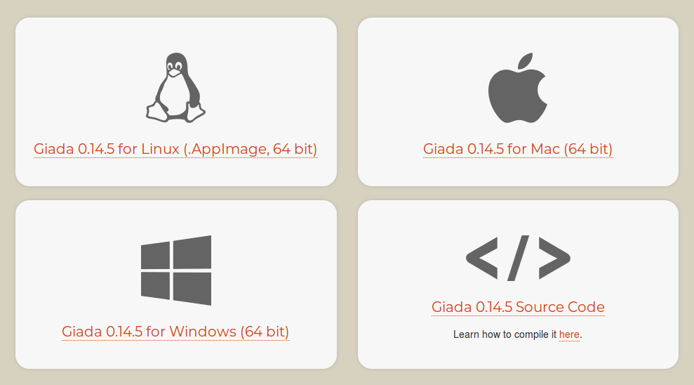
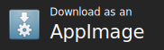

Welcome to the AppImage documentation¶
Willkommen • Welcome • 欢迎 • Bienvenue • Benvenuto • Bienvenido • ようこそ • Mabuhay • Välkommen • أهلا وسهلا • Добро пожаловать • Merhaba • Bonvenon • 歡迎光臨
See also
First-time users, heads up! Check out our Quickstart chapter!
In this documentation, all aspects of the AppImage project shall be explained, to have a single unified source of information.
Note
This documentation contains a lot of valuable information, but there’s always something to add. Contributions welcome!
If you are new to AppImage, please read the introduction. It describes the ideas behind AppImage, shows the motivation, explains why you as a user and/or developer should be interested in AppImages. Also, it explains the core concepts of AppImage’s design.
To learn more about using AppImages, please read the User Guide. If you are interested in building and distributing AppImages or building software that works with AppImages, please check the Packaging Guide.
Introduction¶
AppImage provides a way for upstream developers to provide “native” binaries for Linux users just the same way they could do for other operating systems. It allow packaging applications for any common Linux based operating system, e.g., Ubuntu, Debian, openSUSE, RHEL, CentOS, Fedora etc. AppImages come with all dependencies that cannot be assumed to be part of each target system in a recent enough version and will run on most Linux distributions without further modifications.
AppImage is the format, and AppImageKit provides a reference implementation.
The following section provides an overview of the AppImage idea, the motives behind AppImage, and explains the basic concepts. Furthermore, there’s an overview over the currently existing software, and some words on upstream packaging.
Quickstart¶
This page contains information for users new to AppImage, and want to get started.
Contents
How to run an AppImage¶
It’s quite simple to run AppImages. All you have to do is download them, make them executable and run them. This can either be done using the GUI or via the command line.
Using the GUI¶
Open your file manager and browse to the location of the AppImage
Right-click on the AppImage and click the ‘Properties’ entry
Switch to the Permissions tab and
Click the ‘Allow executing file as program’ checkbox if you are using a Nautilus-based file manager (Files, Nemo, Caja), or click the ‘Is executable’ checkbox if you are using Dolphin, or change the ‘Execute’ drop down list to ‘Anyone’ if you are using PCManFM
Close the dialog
Double-click on the AppImage file to run
Please see also the video below:

Using the Terminal¶
Open a terminal
Change to the directory containing the AppImage, e.g., using
cd <my directory>Make the AppImage executable:
chmod +x my.AppImageRun the AppImage:
./my.AppImage
That’s it! The AppImage should now be executed.
Translated versions of this guide¶
Translated versions are available in a post in the AppImage forum.
Getting help¶
If you’re new to AppImage and have problems getting up and running, please don’t hesitate to contact the AppImage team and their awesome community. They’re happy to help! Please see the Contact page for more information.
Motivation¶
There’s two different points of view when looking at AppImages: the user’s and the developer’s. The following section explains both of them.
Contents
Why would I as a user want to use AppImages?¶
Consider the following user stories:
“I as a user want to run the latest version of my favorite app on my stable distribution, which ships only with an old outdated version.”
“I as a user need to use multiple versions of an application in parallel.”
“I as a user want to take my favorite applications with me on a portable disk together with my data, allowing me to use any Linux computer to work with my files.”
“I am in a corporate or university environment and want to simply run some specific software, but lack permissions to ‘install’ applications.”
All these use cases can be accomplished by using AppImages. They’re a trade-off between a simple user experience and resulting file size. The unique user experience guarantees that even less tech-savvy people can get started without any major issues. AppImage is primarily a user-focused way of bundling software.
As AppImage has been around for a while, a lot of useful, optional features have been developed, ranging from efficient updates over so-called desktop integration to software catalogs. None of these are required for the basic experience, though. AppImages are designed to be run in three steps at most.
An important advantage is that AppImage is designed from ground to run without super user permissions. Almost all major distributions are compatible with AppImages, without requiring the user to make modifications to the base system. AppImages ship with their own runtime, and don’t require external resources if packaged properly. Students in university labs for instance can simply put an AppImage on a USB disk and use it normally, on any machine.
To sum up: AppImages provide a easy and unified user experience, have a large user base and eco system, and there’s a lot of tools that improve the users’ user experience.
Why would I as a developer want to make and distribute AppImages?¶
Many developers have found that they can deploy their apps to most operating systems with viable efforts. They can say, “I make binaries for Windows”, or “I make binaries for macOS”. However, when trying to do the same for Linux, they commonly face a situation where they cannot “make binaries for Linux”, but they have to make them for Ubuntu, Debian, CentOS, openSUSE etc. Read: they have to make binaries for every distribution.
The problem with this is that Linux is just the kernel, but the operating systems users run are separate projects with separate goals and concerns. They all ship with different versions and combinations of certain libraries, and most of them require software to be shipped separately, linking to binaries in the distribution. Therefore, in order to be able to run a certain binary, that binary must be compiled against the distribution’s set of libraries. As soon as another distribution’s collection of libraries is not the same as the one the binary was built on, it will crash or even refuse to run.
To fix this issue, one has to do the same one would do to prevent issues like missing shared libraries (or version incompatibilities) that is used on other platforms: ship the dependency libraries along with the own software’s binaries.
This can be accomplished using traditional tarballs that contain all the libraries and maybe some sort of “run script” that makes sure only those libraries are run, but it has a few major disadvantages. First of all, it is hard to get the right set of libraries that must be shipped, excluding the ones that would cause issues (lowest level dependencies such as libc, libdl, etc.). But even worse, the user is presented with an archive that they must extract, and they must be explained how to actually run the software within it. Furthermore, they now have that data on their hard drive, and have to manage it themselves, without any kind of helpers.
In order to improve the usability and reduce the maintenance effort, AppImage was created. AppImages are bundles of programs, their dependency libraries and all the resources they need during the runtime. They’re single binaries, following the “one app = one file” core principle.
Making AppImages is very simple for a developer. There’s tools which generate an AppImage from a so-called AppDir. There’s simple tools to create such an AppDir for an existing software, which are aware of potential cross distro incompatibilities, and try to avoid them. And once the AppImage has been built, it will “just run” on all major desktop distributions.
Stop making binaries “for distributions” and start making binaries “for Linux” today!
AppImage advantages¶
This chapter compares AppImage with traditional application packaging formats on Linux and explains the advantages of the AppImage format. You can skip this chapter if you already know why AppImages are useful.
Traditionally, applications have been installed on Linux systems by using the package manager that comes with the Linux distribution. However, this model does not scale well for long-tail applications, applications that are only used by a few users, or in cases where users want to use the very latest applications immediately after they are published by their developers. It also is very cumbersome for application developers that want to reach a large audience quickly.
Contents
Advantages for users¶
On the desktop, users are used to installing an operating system, using that operating systems for many years, and running the most recent applications whenever they feel like it. However, many Linux distributions restrict the availability of applications to those that were already published at the point in time when the Linux distribution was published. This effectively means that if the user wants to use a stable operating system, then the user is locked into a set of applications that was recent at the point when the operating system was released. While this may be reasonable for enterprise-critical applications or server side processes, it is not the model users expect from a desktop operating system.
So-called “rolling release” distributions exist that provide latest versions of software. However, they make no distinction between the core operating system and applications. So, with a “rolling release” distribution users don’t only get the latest applications, but also an ever-changing base system. While this may be suitable for hobbyists and technology enthusiasts, it is hardly suitable for productive use where the base system has to be supportable.
The combination of a long-term stable base operating system with the latest applications delivered in AppImage format can provide an elegant solution to this dilemma. While the base operating system can stay stable and only change every few years, users can download and run the very latest applications whenever they appear.
AppImage also makes it easy to try out new versions of applications. Since versions can exist alongside each other, the user can simply download a new version of an application and try it out. If the new version proves to be superior, the user that can then delete the old version and work with the new one. However, should the new version have bugs or be otherwise unusable, the user can simply delete the new version and continue using the old version. This is also very useful for testing nightly or continuous builds and for giving feedback to the application development team.
Advantages for system administrators¶
System administrators in corporate, educational or institutional settings usually need to support a large number of desktop systems, where they either need to lock down the system so that users cannot make changes such as application installations, or need to find a way to leave the base system supportable while users can run applications on top.
AppImages provide an elegant solution here: Since the core operating system is not changed through the installation of applications, the system stays pristine and supportable no matter what kind of applications end users run on the system. Users are happy because they can run their favorite applications without having to ask a system administrator to install them. System administrators are happy because they have less work.
Advantages for application authors¶
Application authors may want to reach as many users as possible, regardless of the operating system and version users are running. With the traditional model, application authors either need to get their application into Linux distributions by creating packages according to the rules of distributions, which can be a lengthy and time-consuming process, or need to find someone who creates the application package for them. It does not help that different Linux distributions have very different rules for packaging applications. This means that if an author is successful to package an application according to the rules of one distribution, it may well not be suitable for inclusion in another distribution. In any case, it is not a quick and easy operation to get a new application into every Linux distribution. And even if an author gets an application into a Linux distribution, it will only appear in the soon-to-be-released version of that Linux distribution, which means that all the currently existing users using older versions of the Linux distribution are left out in the cold.
If a third party (the distribution’s “maintainer”) packages the application for inclusion in the distribution, the third party may make unintended changes to the application not authorized by the original author. This has led to some application authors to ask Linux distributions to no longer distribute their software because they did not like the changes.
Some developers do not want their applications to be distributed randomly, but be in full control over who downloads what and when. For example an application author may want users to fill in a survey before downloading the application. Also, the author may want to count the number of downloads. In other cases still, the application author may want to ask for a donation or even a required payment before the user can download the application through services such as Gumroad, PayPal, or Patreon. In the traditional Linux distribution model, this is not possible.
Providing an AppImage solves these kinds of issues, since the application author is in full control over the application distribution and the user experience connected to it.
Some applications require certain versions of dependencies in order to function properly. For example, an application may run only on a certain version of the Qt framework and may run into unexpected issues if another version is used. In the traditional Linux distribution model, an application has to use whatever version of a library the Linux distribution happens to provide, whereas with AppImage, the application author can exactly decide which version of a dependency should be used by the application.
Advantages for software testers¶
Successful application projects run a lot of tests. Whereas some tests may be automated, manual tests are always important to ensure both functionality and usability. In regression testing, different versions of an application are compared to each other concerning features and bugs. AppImage makes it easy to conduct application tests on local machines, since it allows to run various different versions of applications alongside each other. With portable mode, it is also possible to isolate the settings of each version of the application from each other, allowing for clean testing environments.
The LibreOffice project, for example, uses AppImages to test new application versions.
Concepts¶
The AppImage development follows a few easy-to-understand core principles and concepts that keep it simple to use for developers and users. In this section, the most prominent concepts are explained.
Contents
One app = one file¶
AppImages are simple to understand. Every AppImage is a regular file, and every AppImage contains exactly one app with all its dependencies. Once the AppImage is made executable, a user can just run it, either by double clicking it in their desktop environment’s file manager, by running it from the console etc.
Note
On a regular basis, users ask about implementing support for some sort of “reusable/shared frameworks”. These frameworks are supposed to contain bundles of libraries which are needed by more than one AppImage, and hence could save some disk space. For management, they suggest complex automagic systems that will automatically fetch the “frameworks” from the Internet if they’re not available, or some complicated, mostly manual methods how to users could bundle frameworks together with the AppImages on portable disks like USB sticks.
These may be good ideas for some people, and even if they worked perfectly fine, they’d break with our most important concept: one app = one file. AppImages are so simple to understand because every application is a single file. There’s no complexity in this approach, even grandma could understand it. And after all, disk space is cheap nowadays, right?
If you prefer this approach or absolutely need it, please check out alternative approaches. AppImage will never implement such a feature.
Do not depend on system-provided resources¶
The author of an AppImage needs to decide for which target systems (Linux distributions) they want to offer the AppImage. Then, the author needs to bundle any dependencies that cannot reasonably be assumed to come with every target system (Linux distributions) in its default installation in a recent enough version.
To be able to run on any Linux distribution, an AppImage should bundle all the resources it needs at runtime that cannot be reasonably expected to be “there” in the default installation of all still-supported target systems (Linux distributions). The most common resources are the actual binaries, shared library dependencies, icons and other graphics and of course one or more desktop files for desktop integration.
This doesn’t mean an AppImage must not use resources provided by the system, like for example basic libraries that can be assumed to be part of every target system (e.g., the C standard library or graphics libraries), user interface themes or the like. See the excludelist for a list of the libraries we consider to currently be part of each still-supported target system (distribution).
Build on old systems, run on newer systems¶
It is considered best practice to develop and compile the application on the oldest still-supported Linux distribution that we can assume users to still use. For example, the oldest still-supported LTS release of Ubuntu is a good choice to develop applications against and build applications on.
Applications should be built on the oldest possible system, allowing them to run on newer system. This allows the exclusion of certain “base libraries”, which can be expected to be present on all major desktop Linux distributions, reducing the overhead of one app = one file. These dependencies are mostly shared libraries and involve low level libraries like libc.so.6 (the GNU C library, the C language standard library the majority of all Linux distributions use), but also common libraries like zlib or the GLib libraries are normally present.
It may seem contradictory to the previous section to rely on distribution provided resources. This is a trade-off between trying to reduce redundancies while at the same time being as self-contained as possible.
In some cases, including the libraries might even break the AppImage on the target system. Those libraries involve, among others, hardware dependent libraries such as graphics card drivers provided libraries (e.g., libGL.so.1, (source)), or libraries that are build and linked differently on different distributions (e.g., libharfbuzz.so.0 and libfreetype.so.6 (source).
The list of libraries that can resp. have to be excluded, the so-called excludelist, is carefully curated by the AppImage team, and is regularly updated.
AppImage specification¶
The term AppImage does not refer to some software project, but is actually a standard specified in the AppImage specification. Its reference implementation is called AppImageKit.
Being designed as a standard with a reference implementation allows users to implement their own tools to build AppImages, and helps maintaining compatibility between different tools and components.
AppDirs¶
The term AppDir refers to an application directory. These directories are the “source” of AppImages. When appimagetool builds an AppImage, it creates a read-only image of such a directory, prepends the runtime, and marks the file executable.
The AppDir format is described in the appdir-description.
Software Overview¶
Todo
list deprecated components
Contents
AppImage project¶
AppImageKit¶
AppImageKit is the reference implementation of the AppImage specification. It is split up into several components, which are described in this subsection.
runtime¶
The runtime provides the “executable header” of every AppImage. When executing an AppImage, the runtime within the AppImage is run, which mounts the embedded file system image read-only in a temporary location, and launches the payload application within there. After the payload application exited, the runtime unmounts the squashfs image and cleans up the temporary resources (such as, the temporary mountpoint directory).
Download: There is usually no reason to download this manually, but if you still want to, you can get it from https://github.com/AppImage/AppImageKit/releases/continuous. Keep in mind that on its own it does nothing, it needs to be combined with a filesystem image to form a valid AppImage, usually by using appimagetool which comes with its own copy of the runtime.
appimagetool¶
appimagetool is the easiest way to create AppImages from existing directories on the system, the so-called :ref:`AppDir`s. It creates the AppImage by embedding the runtime, and creating and appending the filesystem image.
appimagetool implements all optional features, like for instance update information, signing, and some linting options to make sure the information in the AppImage is valid (for instance, it can validate AppStream files).
Download: You can get it as an AppImage from https://github.com/AppImage/AppImageKit/releases/continuous.
AppRun¶
Every AppImage’s AppDir must contain a file called AppRun, providing the “entry point”. When running the AppImage, the runtime executes the AppRun file within the AppDir.
AppRun doesn’t necessarily have to be a regular file. If the application is relocatable, it can just be a symlink to the main binary. Tools like linuxdeploy can turn applications into relocatable applications, and therefore create such a symlink.
In some cases, though, when an existing application must not be altered (e.g., when the license prohibits any modifications) or tools like linuxdeploy cannot be used, AppImageKit’s AppRun.c can be used. AppRun.c attempts to make programs load bundled shared libraries instead of system ones by manipulating environment variable. Furthermore, it attempts to prevent warnings users might encounter that are coming from the fact the AppDir is mounted read-only.
Using AppRun.c is not a guarantee that an application will run, and the packager must provide all the resources an application could need manually (or by using external tools) before creating the AppImage with appimagetool. AppRun force-changes the current working directory, and therefore applications can not detect where the AppImage was called originally. This may be especially annoying for CLI tools, but can also be a problem for GUI applications expecting paths via parameters.
Note
AppRun.c, the binary from AppImageKit, is legacy technology and should be avoided if possible. Tools like linuxdeploy deploy applications in a different way (they are smart enough so that a simple symlink called AppRun to the main binary works just fine), and made using AppRun.c obsolete in most cases.
There are some edge cases where AppRun.c is still in use, and there it might be useful. However, it suffers from many limitations and requires some workarounds (which require troublesome mechanisms, such as e.g., force-changing current working directory, as described in this section), which can cause a lot of trouble while trying to debug an AppImage. Please beware of these before thinking about using AppRun.c in your AppImage.
Download: There is usually no reason to download this manually, but if you still want to, you can get it from https://github.com/AppImage/AppImageKit/releases/continuous.
Helpers¶
AppImageKit ships with a few helpers that can be used to verify and validate some AppImage features.
validate can validate the PGP signatures inside AppImages.
Normally there is no need to use this directly, this is mainly for debugging for AppImage developers.
Download: Currently this needs to be build from source. The source is in https://github.com/AppImage/AppImageKit/. In the future it may become bundled with or its functionality may become integrated into appimagetool.
Calculates the MD5 digest used for desktop integration purposes for a given AppImage. This digest depends on the path, not on the contents.
Normally there is no need to use this directly, this is mainly for debugging for AppImage developers.
Download: Currently this needs to be build from source. The source is in https://github.com/AppImage/AppImageKit/. In the future it may become bundled with or its functionality may become integrated into appimagetool.
AppImageUpdate¶
AppImageUpdate lets you update AppImages in a decentralized way using information embedded in the AppImage itself.
The project consists of two tools: appimageupdatetool, a full-featured CLI tool for updating AppImages and dealing with update information, and AppImageUpdate, a user interface for updating AppImages written in Qt.
Download: You can get it as an AppImage from https://github.com/AppImage/AppImageUpdate/releases/continuous.
appimaged¶
appimaged is a daemon that monitors a predefined set of directories on the system, looking for AppImages. It automatically integrates all AppImages it can find during an initial search, and then live watches for new AppImage (or AppImages that were removed) and (de)integrates these immediately.
It is shipped in a few native distribution package formats as well as as AppImage.
Warning
One of the monitored directories is ~/Downloads. If the directory is very large, appimaged usually needs quite long to visit all files. It is likely to slow down the system (specifically, the filesystem).
Download: You can get it as an AppImage from https://github.com/AppImage/appimaged/releases/continuous.
Third-party tools¶
This section showcases a couple of third-party tools that can be used to create and handle AppImage files.
linuxdeployqt¶
linuxdeployqt is a simple Qt-based command line tool that can be used to create AppDirs and AppImages. It is based on the similar macdeployqt tool that comes with Qt. It can be used to produce AppDirs and AppImages for C, C++, and Qt/QML applications, as well as applications written in other compiled languages.
See also
There is a copy-and-paste example for how to use it on Travis CI at https://github.com/probonopd/linuxdeployqt#using-linuxdeployqt-with-travis-ci.
Download: You can get it as an AppImage from https://github.com/probonopd/linuxdeployqt/releases/tag/continuous.
linuxdeploy¶
linuxdeploy is a simple yet flexible, plugins-based to use tool that can be used to create AppDirs and AppImages. It has been developed in 2018, and describes itself as an “AppDir creation and maintenance tool”.
linuxdeploy is planned to succeed of linuxdeployqt, and can be used in all projects that use linuxdeployqt. The list of plugins is continually growing, providing solutions for bundling frameworks such as Qt as well as complete environments for non-native programming languages such as Python.
See also
There’s a guide on native binary packaging and a general linuxdeploy user guide in the Packaging Guide.
Download: You can get it as an AppImage from https://github.com/linuxdeploy/linuxdeploy/releases/continuous.
AppImageLauncher¶
AppImageLauncher is a helper application for Linux distributions serving as a kind of “entry point” for running and integrating AppImages.
Quoting the README:
AppImageLauncher makes your Linux desktop AppImage ready™. By installing it, you won’t ever have to worry about AppImages again. You can always double click them without making them executable first, just like you should be able to do nowadays. You can integrate AppImages with a single mouse click, and manage them from your application launcher. Updating and removing AppImages becomes as easy as never before.
Due to its simple but efficient way to integrate into your system, it plays well with other applications that can be used to manage AppImages, for example app stores. However, it doesn’t depend on any of those, and can run completely standalone.
Install AppImageLauncher today for your distribution and enjoy using AppImages as easy as never before!
—https://github.com/TheAssassin/AppImageLauncher/blob/master/README.md
AppImageLauncher doesn’t provide any kind of “app store” software, but integrates into system-provided launchers’ context menus. It provides tools for updating (based on AppImageUpdate) and removing AppImages.
Download: You can get AppImageLauncher-Lite as an AppImage and the full version as a deb from https://github.com/TheAssassin/AppImageLauncher/releases/continuous.
NX Software Center¶
A portable Software Center for portable applications thanks to AppImage.
Download: You can get NX Software Center as part of Nitrux OS from https://nxos.org/. There are currently no recent continuous standalone AppImage builds available.
Todo
Describe the rest of the third-party tools
A word on upstream packaging¶
The AppImage ecosystem is built around the notion of “upstream packaging”. With AppImage, typically the application author is who packages and distributes the application. This is different from the traditional Linux distribution model, where the application author and the application packager (also called the maintainer) are often different persons.
AppimageKit is designed with “upstream packaging” in mind. This means that we want the original author of an application to be the person that packages it as an AppImage, distributes it to end users, and supports it.
In this regard, if image is very similar to an .exe file on Windows or a .dmg file on the Mac. These files are normally prepared by the original application authors rather than by third parties. This ensures that the software works exactly the way the original application author has envisioned it to work. It also means that the application author does not have to follow arbitrary rules set by Linux distributions.
Note
Before you package an application as an AppImage, ask yourself whether you are either the application author or a member of the application team. If not, it is most likely better to ask the original author of the application or the application team to provide an official AppImage.
Advantages¶
Upstream packaging has a lot of advantages: first and foremost, it allows the application author to control the entire user experience from how the user gets the application to how it works. it also allows the original author of an application to support the application since no unauthorised changes or made to it by third parties. For end-users, it is clear that the original application author is who is responsible for fixing bugs come out as there is no shared responsibility between the application author and the third party, e.g. a Linux distribution, that has distributed the application.
Disadvantages¶
However, upstream packaging also has disadvantages: most prominently, there is no curator who assesses the quality and integrity of the application. Hence, the end user has to trust the application author when running an application that has been distributed directly by the original application author.
If upstream packaging is not possible¶
In some cases, the original application author or application team may not be interested in providing an official AppImage. In this case you have the following options: For open source projects, you can often make and send a pull request, and for closed source applications you can create a yml recipe that can be used to convert the existing Linux binaries into an AppImage using pkg2appimage.
Open source projects¶
For open source projects, you can often make and send a pull request (GitHub) or merge request (GitLab) that generates an AppImage as part of the project’s build pipeline. Most open source projects will gladly accept such pull requests, especially if you indicate that you are willing to maintain the AppImage generation going forward.
Many open source projects already use continuous integration on systems such as Travis CI, GitLab CI, Jenkins, or the Open Build Service. If a project already uses one of those services, it is most beneficial to generate the AppImage on that service.
Closed source applications¶
For closed source applications you can create a yml recipe that can be used to convert the existing Linux binaries into an AppImage using pkg2appimage).
Note that you may not be allowed to redistribute the AppImage of the application. In this case, you can distribute .yml recipes that end users can use to produce their own AppImages of the application easily. This applies to applications such as Google Chrome, Spotify, Skype, and others.
User Guide¶
This chapter shows users what AppImages are from a user perspective, how they can be used, what desktop integration is and how it is accomplished, and what other tools are provided to manage, update etc. AppImages.
Frequently Asked Questions¶
The most common questions are answered directly here to save you from having to read the entire user guide.
Contents
 What is an AppImage?¶
What is an AppImage?¶
An AppImage is a downloadable file for Linux that contains an application and everything the application needs to run (e.g., libraries, icons, fonts, translations, etc.) that cannot be reasonably expected to be part of each target system.
How do I run an AppImage?¶
Make it executable and double-click it.
How can I integrate AppImages with the system?¶
Using the optional appimaged daemon, you can easily integrate AppImages with the system. The daemon puts AppImages into the menus, registers MIME types, icons, all on the fly. You can download it from this repository. But it is entirely optional.
Where can I download AppImages?¶
See the “repository” of upstream-generated AppImages.
Where do I store my AppImages?¶
An important point about the AppImage format is that you can store AppImage files wherever you want. This includes your home directory, your downloads directory, a dedicated applications directory, a USB thumb drive, a CD-ROM or DVD, or even a network file share. No matter where you keep your AppImages, you are still able to run them. This is very similar to how applications work on macOS. Unlike with traditional Linux packages, you do not need to install AppImages or put them into some special location in order for them to work.
If you don’t want to leave them in $HOME/Downloads, then $HOME/Applications is a good choice. Many third-party tools (especially the ones managing desktop integration) use this location, too. Other options involve $HOME/.local/bin and $HOME/bin, which are useful mainly for CLI tools.
On CentOS/RHEL and Fedora: When you login, the script $HOME/.bash_profile is executed and this script adds $HOME/.local/bin:$HOME/bin to your path.
On Ubuntu: When you login, the script $HOME/.profile is executed and this script adds "$HOME/bin:$HOME/.local/bin" to your path.
Besides, every other location works, e.g., a USB thumbdrive, a network location, or a CD-ROM, but then the AppImages won’t be on your path, which means that you cannot simply type their name into a terminal but have to use the full path.
Where can I request AppImages?¶
If there is no AppImage of your favorite application available, please request it from the author(s) of the application, e.g., as a feature request in the issue tracker of the application.
For example, if you would like to see an AppImage of Mozilla Firefox, then please leave a comment at https://bugzilla.mozilla.org/show_bug.cgi?id=1249971. The more people request an AppImage from the upstream authors, the more likely is that an AppImage will be provided.
Where do I get support?¶
Please refer to the contact page.
Running AppImages¶
This page shows how a user can run AppImages, on their favorite distribution using the desktop environment tools or via the terminal. Also, it explains the concept of desktop integration, and presents tools that can be used for this purpose.
Contents
Download, make executable, run¶
It’s quite simple to run AppImages. As the heading says, just download them, make them executable and run them. This can either be done using the GUI or via the command line.
See also
Information on how to run AppImages was moved into our Quickstart page.
Please see How to run an AppImage for more information.
Mount or extract AppImages¶
To inspect the contents of any AppImage, it is possible to either mount them without running them, or extract the contents to a directory in the current working directory..
Mount an AppImage¶
AppImages can be mounted in the system to provide read-only access for users to allow for inspecting the contents.
To mount an AppImage temporarily, you have two options. The easiest way to do so is to call AppImages with the special parameter --appimage-mount, for example:
> my.AppImage --appimage-mount
/tmp/mount_myXXXX
# now, use another terminal or file manager to inspect the contents in the directory printed by --appimage-mount
The AppImage is unmounted when the application called in the example is interrupted (e.g., by pressing Ctrl+C, closing the terminal etc.).
Note
This is only available for type 2 AppImages. Type 1 AppImages do not provide any self-mounting mechanism. To mount type 1 AppImages, use mount -o loop.
This method is to be preferable, as other methods have some major disadvantages explained below.
Another way to mount AppImages is to use the normal mount command toolchain of your Linux distribution. Mounting and unmounting devices, files, images and also AppImages requires root permissions. Also, you need to provide a mountpoint. Please see the following example:
For type 1 AppImages:
> mkdir mountpoint
> sudo mount my.AppImage mountpoint/
# you can now inspect the contents
> sudo umount mountpoint/
For type 2 AppImages:
> mkdir mountpoint
> my.AppImage --appimage-offset
> 123456
> sudo mount my.AppImage mountpoint/ -o offset=123456
# you can now inspect the contents
> sudo umount mountpoint/
Note that the number 123456 is just an example here, you will likely see another number.
Warning
AppImages mounted using this method are not unmounted automatically. Please do not forget to call umount the AppImage as soon as you don’t need it mounted any more.
If an AppImage is not unmounted properly, and is moved to a new location, a so-called “dangling mount” can be created. This should be avoided by properly unmounting the AppImages.
Note
Type 2 AppImages which are mounted using the --appimage-mount parameter are not affected by this problem!
See also
There is currently no way to use the former method without calling the target AppImage. This might not always be appropriate, e.g., if the AppImage is not trustworthy.
The AppImage team is working on implementing a mount option in appimagetool. Please see the related GitHub issue for progress on this.
Extract the contents of an AppImage¶
An alternative to mounting the AppImages is to extract their contents. This allows for modifying the contents. The resulting directory is a valid AppDir, and users can create AppImages from them again using appimagetool.
Analog to mounting AppImages, there is a simple commandline switch to extract the contents of type 2 AppImages without external tools. Just call the AppImage with the parameter --appimage-extract. This will cause the runtime to create a new directory called squashfs-root, containing the contents of the AppImage’s AppDir specification.
Type 1 AppImages require the deprecated tool AppImageExtract to extract the contents of an AppImage. It’s very limited functionality wise, and requires a GUI to run. It creates a new directory in the user’s desktop directory.
See also
There is currently no way to use the former method without calling the target AppImage. This might not always be appropriate, e.g., if the AppImage is not trustworthy.
The AppImage team is working on implementing a mount option in appimagetool. Please see the related GitHub issue for progress on this.
Integrating AppImages into the desktop¶
AppImages are standalone bundles, and do not need to be installed. However, some users may want their AppImages to be available like distribution provided applications. This primarily involves being able to launch desktop applications from their desktop environments’ launchers. This concept is called desktop integration.
appimaged¶
appimaged is a daemon that monitors the system and integrates AppImages. It monitors a predefined set of directories on the user’s system searching for AppImages, and integrates them into the system using libappimage.
See also
More information on appimaged can be found in appimaged.
AppImageLauncher¶
AppImageLauncher is a helper application for Linux distributions serving as a kind of “entry point” for running and integrating AppImages. It makes a user’s system AppImage-ready™.
AppImageLauncher must be installed into the system to be able to integrate into the system properly. It uses technologies that are independent from any desktop environment features, and therefore should be able to run on most distributions.
After install AppImageLauncher, you can simply double-click AppImages in file managers, browsers etc. You will be prompted whether to integrate the AppImage, or run it just once. When you choose to integrate your AppImage, the file will be moved into the directory ~/Applications. This helps reducing the mess of AppImages on your file system and prevents you from having to search for the actual AppImage file if you want to e.g., remove it.
To provide a complete solution for managing AppImages on the system, AppImageLauncher furthermore provides solutions for updating and removing AppImages from the system. These functions can be found in the context menus of the entries in the desktop’s launcher.
See also
More information about AppImageLauncher can be found in AppImageLauncher.
Troubleshooting¶
Please refer to our Troubleshooting page.
Using portable mode¶
This page describes a mode some newer AppImages (i.e., built in 2017 or later) provide, the portable mode. This mode allows for bundling an application’s data next to the application’s AppImage.
Contents
Introduction¶
Sometimes it can be useful for data of an application to travel along with the application, for example to put the application on a USB stick that can be used with different computers. In the windows world, this concept is known as “portable applications”.
Normally the application contained inside an AppImage will store its configuration files wherever it always stores them (most frequently somewhere inside $HOME). In other words, the fact that an application is contained inside an AppImage normally does not change where the application stores its data.
However, there is functionality in newer AppImages that can make the application’s data travel along with the application, if certain directories are present next to the AppImage file.
If you invoke an AppImage built with a recent version of AppImageKit and have one of these special directories in place, then the configuration files will be stored alongside the AppImage. This can be useful for portable use cases, e.g., carrying an AppImage on a USB stick, along with its data.
If there is a directory with the same name as the AppImage plus
.home, then$HOMEwill automatically be set to it before executing the payload applicationIf there is a directory with the same name as the AppImage plus
.config, then$XDG_CONFIG_HOMEwill automatically be set to it before executing the payload application
Example¶
Imagine you want to use the Leafpad text editor, but carry its settings around with the executable. You can do the following:
# Download Leafpad AppImage and make it executable
$ wget -c "https://bintray.com/probono/AppImages/download_file?file_path=Leafpad-0.8.18.1.glibc2.4-x86_64.AppImage" -O Leafpad-0.8.18.1.glibc2.4-x86_64.AppImage
$ chmod a+x Leafpad-0.8.18.1.glibc2.4-x86_64.AppImage
# Create a directory with the same name as the AppImage plus the ".config" extension
# in the same directory as the AppImage
$ mkdir Leafpad-0.8.18.1.glibc2.4-x86_64.AppImage.config
# Run Leafpad, change some setting (e.g., change the default font size) then close Leafpad
$ ./Leafpad-0.8.18.1.glibc2.4-x86_64.AppImage
# Now, check where the settings were written:
$ find Leafpad-0.8.18.1.glibc2.4-x86_64.AppImage.config
(...)
Leafpad-0.8.18.1.glibc2.4-x86_64.AppImage.config/leafpad/leafpadrc
Note that the file leafpadrc was written in the directory we have created before.
AppImage for macOS switchers¶

This page compares the AppImage terms to its macOS equivalents. It should help macOS to Linux switchers to “get” AppImage concepts quickly.
AppImage concept |
Rough macOS equivalent |
|---|---|
|
|
|
|
|
|
|
|
|
|
No direct equivalent, but update information in ELF section |
|
Optional |
Launch Services to register applications in the system (e.g., MIME types, icons, etc.) |
No direct equivalent, but AppImageHub central directory of available AppImages |
Mac App Store |
Optional signature in ELF section |
Signatures in |
No direct equivalent (yet?), but use linuxdeployqt (for Qt, C++, C) or electron-builder for Electron apps in the build chain |
Xcode IDE generates |
|
|
Troubleshooting¶
This page covers some of the most common problems with AppImages users might face, and provides solutions and links to external references. This page is not considered to be exhaustive. For additional help, please see the Contact page.
Contents
Note
If you as a user think there are errors on this page or you would like to have some additional problems covered, please do not hesitate to create an issue on GitHub (or ideally send a pull request right away). We’re always open for feedback!
I have issues with Electron-based AppImages and their sandboxing¶
AppImages based on Electron require the kernel to be configured in a certain way to allow for its sandboxing to work as intended (specifically, the kernel needs to be allowed to provide “unprivileged namespaces”). Many distributions come with this configured out of the box (like Ubuntu for instance), but some do not (for example Debian).
Warning
Please note that the AppImage team does not provide any guarantees that enabling this feature is secure and safe. If in doubt, you need to contact your distribution first. If they enable those securely by default, all users can benefit from this feature.
Check if kernel is configured correctly already¶
To check if your distribution has unprivileged namespaces enabled, please run:
> sysctl kernel.unprivileged_userns_clone
kernel.unprivileged_userns_clone = 1
A 1 means that the unprivileged namespaces are enabled already, and you do not have to take any action.
A 0 indicates that the feature is available, but not enabled at the moment. Please see the following sections on how to enable it.
Note
The command does not need to be run as root.
Configure unprivileged sandboxes¶
To temporarily enable unprivileged namespaces, you can run this command:
sudo sysctl -w kernel.unprivileged_userns_clone=1
You can run the same command, swapping the 1 for a 0, to disable this again.
To permanently enable the feature, it is recommended to create a new file in /etc/sysctl.d/. For your convenience, we have prepared the following command which creates the file on the fly:
echo kernel.unprivileged_userns_clone = 1 | sudo tee /etc/sysctl.d/00-local-userns.conf
Note
This command will take effect only on the next reboot. To change this on a running system, please refer to the previous section.
More information on unprivileged namespaces¶
For more information on unprivileged namespaces, please see https://lwn.net/Articles/673597/.
Packaging Guide¶
This chapter shows application developers how to produce AppImages, how to make them updateable and how to digitally sign them.
Introduction to Packaging¶
So you decided to make an AppImage or two? Great! Or did you just come here to get some insights into how AppImages can be built? Let’s have a look.
There are many different approaches how to build AppImages. Often, packaging an AppImage correctly depends on the application that you’re trying to put into one, the so-called payload. Different programming languages (or, rather, different application types (i.e., native binaries, scripts, bytecode, etc.)) require different methods.
All application bundling attempts have one thing in common: the “input format” which is then turned into an AppImage using appimagetool. This input format is called AppDir, and is described in the AppDir specification.
In a nutshell: packaging AppImages is building an AppDir. This AppDir is then simply turned into an AppImage. But if your AppDir is not built correctly, the AppImage won’t work.
Of course, you’re not left alone with this challenge. There are official as well as unofficial tools that allow you to create working AppDirs. These are described in the following sections. Just pick the one you think suits your needs, and start making AppImages.
Overview¶
There are different ways to create AppImages. The following section gives you an overview of which ways are available, their advantages and disadvantages, and where to find more information.
Contents
Packaging from source¶
The recommended approach is to package software from source. Ideally, upstream application authors take over maintenance of AppImages, and provide them on their release pages.
To learn more about how packaging from source works, please refer to Packaging from source.
The process of packaging from source can and should be automated. CI systems like Travis CI can help with that.
Automated continuous builds on Travis CI¶
This option might be the easiest if you already have continuous builds on Travis CI in place. In this case, you can write a small scriptfile and in many cases are done with the AppImage generation.
More information on using Travis CI for making AppImages can be found in Bundling your Travis CI builds as AppImages.
See also
There are a lot of examples on GitHub that can be found using the GitHub search.
Using electron-builder¶
For Electron based applications, a tool called electron-builder can be used to create AppImages.
With electron-builder, making AppImages is as simple as defining AppImage as a target for Linux (default in the latest version of electron-builder). This should yield usable results for most applications.
See also
More information can be found in the documentation on AppImage and the documentation on distributable formats in the electron-builder manual.
There are a lot of examples on GitHub that can be found using the GitHub search.
Converting existing binary packages¶
This option might be the easiest if you already have up-to-date packages in place, ideally a PPA for the oldest still-supported Ubuntu LTS release (xenial as of 2019, see https://en.wikipedia.org/wiki/Ubuntu#Releases for up to date information) or earlier or a debian repository for oldstable. In this case, you can write a small .yml recipe and in many cases are done with the package to AppImage conversion. See convert-existing-binary-packages for more information.
Using the Open Build Service¶
This option is recommended for open source projects because it allows you to leverage the existing Open Build Service infrastructure, security and license compliance processes.
More information on using OBS for making AppImages can be found in Using the Open Build Service.
Using appimage-builder¶
appimage-builder is a novel tool for creating AppImages. It uses the system package manager to resolve the application dependencies and creates a complete bundle. It can be used to pack almost any kinds of applications including those made using: C/C++, Python, and Java.
This tool removes the limitations of requiring an old system to compile the binaries. It can be used to pack an application from sources or to turn an existing Debian package into an AppImage.
For more information about appimage-builder please visit: https://appimage-builder.readthedocs.io
Manually creating an AppDir¶
Create an AppDir manually, then turn it into an AppImage. Please note that this method should only be your last resort, as the other methods are much more convenient in most cases. Manually creating an AppDir is explained mainly to illustrate how things work under the hood.
See Manual packaging for more information.
Packaging from source¶
This section contains guides how AppImages can be created from source code. It shows a few tricks how functionality of widely used build tools like e.g., CMake, can be re-used to reduce the amount of code required for building AppImages. Also, it is shown how externally maintained tools with support for building AppImages can be used.
Packaging native binaries¶
The most easy packaging methods are available for native binaries, like e.g., produced when compiling C++ or C code. Native binaries have a well defined and reliable behavior to find their runtime dependencies, the so-called shared libraries. These are the primary dependencies you will have to ship with your application. Of course, some applications might require additional resources, e.g., icon files. Also, some applications try to load libraries dynamically during the runtime. But for now, let’s assume we have a basic binary application (this is the most common type).
The AppImage team provides tools that simplify the packaging process significantly. These tools are semi-automatic, and ship with various features needed to bundle said shared library dependencies correctly. The one we are going to use in this guide is linuxdeploy.
linuxdeploy is an AppDir maintenance tool. Its primary focus is on AppDirs, AppImage is just one possible output format. It features a plugin system for greater flexibility in use. Plugins can either bundle additional resources for e.g., frameworks such as Qt, but are also used to provide output generators, e.g., for AppImages.
Contents
Packaging from source¶
Building applications from source and packaging them as AppImages is the most common scenario. In this section, it is described how apps that were built from source can be packaged into AppDirs, from which AppImages are being generated.
Using the build system to build the basic AppDir¶
If you use a modern build system (such as for instance CMake or qmake), you can use the provided make install commands to create an AppDir-like directory that can be used with linuxdeploy.
As install configurations usually install all binaries, libraries, resources etc. in a way defined by the application author, this method provides a very easy and fast way to set up the basic AppDir.
Note
Of course, the application authors need to set up install configurations in their buildsystem, otherwise this method is not usable. Many applications have working install configurations, though. If not, you should ask the authors to add the relevant code to their build system.
CMake provides an additional parameter to configure where the files are installed when running make install called DESTDIR. If DESTDIR is specified, CMake will “install” the files into the given directory instead of the filesystem root (/).
Note
By default, CMake sets an internal variable called CMAKE_INSTALL_PREFIX to a path other than /usr to prevent users calling e.g., sudo make install from damaging their system. The variable must explicitly be set to /usr therefore.
Here’s an example how to use this method:
# fetch sources (you could as well use a tarball etc.)
> git clone https://github.com/linuxdeploy/QtQuickApp.git
> cd QtQuickApp
# build out of source
> mkdir build
> cd build
# configure build system
# the flags below are the bare minimum that is needed, the app might define additional variables that might have to be set
> cmake .. -DCMAKE_INSTALL_PREFIX=/usr
# build the application on all CPU cores
> make -j$(nproc)
# now "install" resources into future AppDir
> make install DESTDIR=AppDir
Now, ideally all the binaries and libraries the app needs are installed into a new directory called AppDir in your build directory.
Note
The quality of the install configurations will vary from app to app. Please don’t be surprised if the application is installed partially only. If the command doesn’t exist at all, please fall back to bundling manually, which is described below.
Qt’s qmake also provides a variable to change the “target” of make install calls called INSTALL_ROOT. The qmake-based method is very similar to the CMake one. There’s just one major difference: qmake does install into /usr by default already.
Preparing a basic application is very simple, as the following example illustrates:
# get the source code
> git clone https://github.com/linuxdeploy/QtQuickApp.git
> cd QtQuickApp
# create out-of-source build dir and run qmake to prepare the Makefile
> mkdir build
> cd build
> qmake ..
# build the application on all CPU cores
> make -j$(nproc)
# use make install to prepare the AppDir
> make install INSTALL_ROOT=AppDir
Now, you have a new directory AppDir which ideally contains all the binaries, shared libraries etc., just like after finishing the CMake method.
Using linuxdeploy for building AppImages¶
Now that we have the basic AppDir, we need to bundle dependencies into it to make the AppDir self-contained in preparation to make an AppImage from it. The following guide shows how linuxdeploy is used for this purpose.
linuxdeploy describes itself as an “AppDir maintenance tool”. Its primary focus is on AppDirs, and it uses plugins to create output formats such as AppImages.
The following section describes how it can be used to deploy dependencies of applications into an AppDir that was created using the methods described in the previous section, and shows how this AppDir can eventually be packaged as an AppImage.
See also
Please see linuxdeploy user guide for more information on how to use linuxdeploy.
Start by downloading linuxdeploy. The recommended way to get it is to use the AppImages provided on the GitHub release page.
Note
At the moment, AppImages are provided for x86/i386 and x86_64/amd64 architectures, as other platforms cannot be targeted properly on the build service. The tool itself should support all major platforms, including ARM. You can compile linuxdeploy yourself to test it. Contributions adding new platforms welcome!
After downloading the AppImage, you have to make it executable, as usual. Then, you can first run linuxdeploy on your AppDir:
> ./linuxdeploy-x86_64.AppImage --appdir AppDir
This creates AppDir if it doesn’t exist yet. Inside AppDir some basic directory structure is created that isn’t necessarily required, but might be handy when adding resources manually to the AppImage.
Note
linuxdeploy supports an iterative workflow, i.e., you run it, and it will start to bundle resources. If there is a problem, it will show a detailed error message, and exit with an error code. You can then fix the issue, and call it again to try again. See ref-linuxdeploy-iterative-workflow for more information.
If your application has installed itself properly, it should have installed a desktop file and an icon as well. The desktop file is used for AppImage desktop integration, and since desktop files require icons, an icon is always required, too.
Example:
# get linuxdeploy's AppImage
> wget https://github.com/linuxdeploy/linuxdeploy/releases/download/continuous/linuxdeploy-x86_64.AppImage
> chmod +x linuxdeploy-x86_64.AppImage
# run linuxdeploy and generate an AppDir
> ./linuxdeploy-x86_64.AppImage --appdir AppDir
You can bundle additional resources such as icon files, executable and desktop files using the respective flags described in the --help text or on linuxdeploy’s homepage.
Note
Desktop file and icon are used for so-called desktop integration. If your build system didn’t install such files into the right location, you can have linuxdeploy put your own files into the right places. Please see linuxdeploy-bundle-desktop-files-icons for more information.
Packaging existing binaries (or: manually packaging everything)¶
Packaging existing binaries is very simple as well. As the existing binaries don’t provide facilities to create a basic AppDir with the build system, you have to package everything into the right place manually.
Luckily, linuxdeploy supports such a workflow as well. It provides functionalities to automatically put the most common resources an application might use (such as binaries, libraries, desktop files and icons) into the right places without having the user to create any sort of structure or know where to put files. This is described in Packaging binaries and other resources manually.
Note
Many applications require more resources during runtime than just the binaries and libraries. Often, they require graphics for drawing a UI, or other files that are normally in a “known good location” on the system. These resources should be bundled into the AppImage as well to make sure the AppImage is as standalone as possible. However, linuxdeploy cannot know which files to bundle.
Please consult the applications’ documentation (e.g., homepage or man pages) to see what kinds of resources must be put into the AppImage. This can involve some trial-and-error, as you need to test your AppImages on different systems to find possible errors.
Warning
In order to be packaged as AppImages, applications must load the resources relative to their main binary, and not from a hardcoded path (usually /usr/...). This is called relocatability.
If your app doesn’t load resources from the AppImage, but e.g., shows errors it couldn’t find resources, it is most likely not relocatable. In this case, you must ask the author of the application to make it relocatable. Many modern frameworks such as Qt even provide functionality to implement this easily. In some cases, there’s also flags you can specify when building from source to make applications relocatable.
Bundling additional resources using linuxdeploy plugins¶
As mentioned previously, linuxdeploy provides a plugin system. So-called “input” plugins can be used to bundle additional resources, such as Qt plugins, translations, etc.
Please see Using input plugins for more information.
Build AppImages from AppDir using linuxdeploy¶
As mentioned previously, linuxdeploy uses plugins to create actual output files from AppDirs. For AppImages, there’s linuxdeploy-plugin-appimage.
To create AppImages, just add --output appimage to your linuxdeploy call to enable the plugin. An AppImage will be created using appimagetool.
Minimal example:
> ./linuxdeploy-x86_64.AppImage --appdir AppDir --output appimage
As most plugins, linuxdeploy-plugin-appimage provides some environment variables to enable additional functionality, such as:
SIGN=1Sign AppImage. See ref-signing-appimages for more information.
UPDATE_INFORMATION=zsync|...Add update information to the AppImage, and generate a
.zsyncfile.
See also
More information on the environment variables can be found in the README, including a complete (and up to date) list of supported environment variables.
Examples¶
In this section, some examples how linuxdeploy can be used are shown.
QtQuickApp¶
This section contains a few example scripts that showcase how AppImages can be built for QtQuickApp, a basic demonstration app based on QtQuick, using some QML internally. It can be built using both CMake and qmake. We use it to show some example scripts how AppImages can be built for it, using the methods introduced in this guide.
make install¶The following script might be used to create AppImages for QtQuickApp, using qmake and make install strategy.
travis/build-with-qmake.sh¶1 2 3 4 5 6 7 8 9 10 11 12 13 14 15 16 17 18 19 20 21 22 23 24 25 26 27 28 29 30 31 32 33 34 35 36 37 38 39 40 41 42 43 44 45 46 47 48 49 50 51 52 53 54 55 | #! /bin/bash
set -x
set -e
# building in temporary directory to keep system clean
# use RAM disk if possible (as in: not building on CI system like Travis, and RAM disk is available)
if [ "$CI" == "" ] && [ -d /dev/shm ]; then
TEMP_BASE=/dev/shm
else
TEMP_BASE=/tmp
fi
BUILD_DIR=$(mktemp -d -p "$TEMP_BASE" appimage-build-XXXXXX)
# make sure to clean up build dir, even if errors occur
cleanup () {
if [ -d "$BUILD_DIR" ]; then
rm -rf "$BUILD_DIR"
fi
}
trap cleanup EXIT
# store repo root as variable
REPO_ROOT=$(readlink -f $(dirname $(dirname $0)))
OLD_CWD=$(readlink -f .)
# switch to build dir
pushd "$BUILD_DIR"
# configure build files with qmake
# we need to explicitly set the install prefix, as CMake's default is /usr/local for some reason...
qmake "$REPO_ROOT"
# build project and install files into AppDir
make -j$(nproc)
make install INSTALL_ROOT=AppDir
# now, build AppImage using linuxdeploy and linuxdeploy-plugin-qt
# download linuxdeploy and its Qt plugin
wget https://github.com/linuxdeploy/linuxdeploy/releases/download/continuous/linuxdeploy-x86_64.AppImage
wget https://github.com/linuxdeploy/linuxdeploy-plugin-qt/releases/download/continuous/linuxdeploy-plugin-qt-x86_64.AppImage
# make them executable
chmod +x linuxdeploy*.AppImage
# make sure Qt plugin finds QML sources so it can deploy the imported files
export QML_SOURCES_PATHS="$REPO_ROOT"/src
# QtQuickApp does support "make install", but we don't use it because we want to show the manual packaging approach in this example
# initialize AppDir, bundle shared libraries, add desktop file and icon, use Qt plugin to bundle additional resources, and build AppImage, all in one command
./linuxdeploy-x86_64.AppImage --appdir AppDir -e QtQuickApp -i "$REPO_ROOT"/resources/qtquickapp.png -d "$REPO_ROOT"/resources/qtquickapp.desktop --plugin qt --output appimage
# move built AppImage back into original CWD
mv QtQuickApp*.AppImage "$OLD_CWD"
|
Note
We’re using a separate bash script that runs in an isolated, temporary directory to prevent modifications to the existing source code or the system.
Many examples “hack” those instructions directly into their CI configuration, e.g., .travis.yml. This approach has many problems, most notably that it’s impossible to test those scripts locally. By extracting the whole process into a script, it becomes quite simple to test the build script locally as well as run it in the CI system.
An example .travis.yml is included in a later section, showing how the script can be run on Travis CI. It’s quite generic, you should be able to copy it without having to make too many modifications.
make install¶The following script might be used to create AppImages for QtQuickApp, using qmake and make install strategy. It is effectively the same script as the qmake one, but uses CMake instead of qmake to build the binaries and install the data into the AppDir.
travis/build-with-cmake.sh¶1 2 3 4 5 6 7 8 9 10 11 12 13 14 15 16 17 18 19 20 21 22 23 24 25 26 27 28 29 30 31 32 33 34 35 36 37 38 39 40 41 42 43 44 45 46 47 48 49 50 51 52 53 54 | #! /bin/bash
set -x
set -e
# building in temporary directory to keep system clean
# use RAM disk if possible (as in: not building on CI system like Travis, and RAM disk is available)
if [ "$CI" == "" ] && [ -d /dev/shm ]; then
TEMP_BASE=/dev/shm
else
TEMP_BASE=/tmp
fi
BUILD_DIR=$(mktemp -d -p "$TEMP_BASE" appimage-build-XXXXXX)
# make sure to clean up build dir, even if errors occur
cleanup () {
if [ -d "$BUILD_DIR" ]; then
rm -rf "$BUILD_DIR"
fi
}
trap cleanup EXIT
# store repo root as variable
REPO_ROOT=$(readlink -f $(dirname $(dirname $0)))
OLD_CWD=$(readlink -f .)
# switch to build dir
pushd "$BUILD_DIR"
# configure build files with CMake
# we need to explicitly set the install prefix, as CMake's default is /usr/local for some reason...
cmake "$REPO_ROOT" -DCMAKE_INSTALL_PREFIX=/usr
# build project and install files into AppDir
make -j$(nproc)
make install DESTDIR=AppDir
# now, build AppImage using linuxdeploy and linuxdeploy-plugin-qt
# download linuxdeploy and its Qt plugin
wget https://github.com/linuxdeploy/linuxdeploy/releases/download/continuous/linuxdeploy-x86_64.AppImage
wget https://github.com/linuxdeploy/linuxdeploy-plugin-qt/releases/download/continuous/linuxdeploy-plugin-qt-x86_64.AppImage
# make them executable
chmod +x linuxdeploy*.AppImage
# make sure Qt plugin finds QML sources so it can deploy the imported files
export QML_SOURCES_PATHS="$REPO_ROOT"/src
# initialize AppDir, bundle shared libraries for QtQuickApp, use Qt plugin to bundle additional resources, and build AppImage, all in one single command
./linuxdeploy-x86_64.AppImage --appdir AppDir --plugin qt --output appimage
# move built AppImage back into original CWD
mv QtQuickApp*.AppImage "$OLD_CWD"
|
The scripts introduced in the previous subsections will move the files back into the directory where they’re called. Therefore, the .travis.yml and especially the script file can be kept delightfully short:
.travis.yml¶1 2 3 4 5 6 7 8 9 10 11 12 13 14 15 16 17 18 19 20 21 22 23 24 25 26 | language: cpp
# needed for installing packages with apt
sudo: required
# we use the Qt PPAs to have some more recent Qt versions that are compatible with Ubuntu trusty
before_install:
- sudo add-apt-repository ppa:beineri/opt-qt-5.10.1-trusty -y
- sudo apt-get update
# install Qt from the PPA, and set up environment so that calls to Qt tools end up in the new Qt installation
install:
- sudo apt-get -y install qt510base qt510declarative
- . /opt/qt*/bin/qt*-env.sh
# use CMake based build script shown in previous section
script:
- bash travis/build-with-cmake.sh
# OPTIONAL: uploading binaries using uploadtool
# see https://github.com/probonopd/uploadtool for more information
branches:
except:
# Do not build tags that we create when we upload to GitHub Releases
# required for uploadtool
- /^(?i:continuous)/
|
See also
Please see the Bundling your Travis CI builds as AppImages section in the Hosted services section for more information on Travis CI. It also contains a guide on uploadtool.
linuxdeploy user guide¶
This page illustrates how linuxdeploy can be used.
Todo
Write introduction
Add references to examples in packaging guide
linuxdeploy is capable of packaging dependencies of resources in an existing AppDir, or creating the AppDir from scratch, bundling resources into the right locations that the user passes to it.
linuxdeploy describes itself as an “AppDir maintenance tool”. Its primary focus is on AppDirs, and it uses plugins to create output formats such as AppImages.
Contents
Packaging dependencies of files in an existing AppDir¶
Sometimes, the build system can be used to install resources into an AppDir-like structure. If this so-called “install configuration” is feature complete, i.e., all the resources an AppImage needs (a binary, an icon and a desktop file), all linuxdeploy has to do is bundle the dependencies of these files.
This workflow is described in Using the build system to build the basic AppDir.
In case some of the required files described above are not installed by make install, you can instruct linuxdeploy to bundle these resources manually. Please see the next section for more information.
Packaging binaries and other resources manually¶
Unlike the old tools, linuxdeploy doesn’t need any existing directory with files in the right positions, etc. Instead, it puts files specified via CLI parameters into the right positions. This makes bundling easier than ever before, as users don’t need to know where to put files any more.
linuxdeploy provides different flags to bundle different kinds of resources. Only resources whose destination can be calculated by linuxdeploy can be bundled this way. Additional resources applications need, which linuxdeploy can not know about, must be bundled by hand. However, the most common resources are covered by the parameters.
--executable/-eBundle a native binary executable. Set up everything so that other libraries, executables etc. use this one instead of a system one.
--library/-lBundle a shared library (
.sofile) into the AppDir. Set up everything so that other libraries, executables etc. use this one instead of a system one.--desktop-file/-dBundle a desktop file into the AppDir. These are required for desktop integration, and there must always be at least one of them in the AppDir. Please see creating-desktop-file for a guide how they can be created, and for best practices related to AppImages.
--icon/-iBundle icon file. Supported are all formats which the Icon Theme Specification lists. linuxdeploy will automatically calculate the right output path, which depends on file format and resolution. You can specify multiple icons for multiple resolutions in the form of
<resolution>/<app_name>.<ext>.
The following example illustrates how an existing binary can be bundled into an AppDir:
Plugin system¶
linuxdeploy provides a flexible packaging system for both bundling additional resources that cannot be discovered automatically by linuxdeploy (i.e., plugins loaded during runtime using dlopen(), icon themes, etc.), and to convert the AppDir into an output format such as AppImage.
Plugins are automatically recognized by linuxdeploy. They are executable files (scripts, native binaries, etc.), which must be in one of the following locations:
in case the linuxdeploy AppImage is used: next to the AppImage
next to the linuxdeploy binary
in any of the directories in
$PATH
Therefore, when downloading additional plugins, just put them into one of these locations, and linuxdeploy can use them.
Plugins are standalone executable files. This means they must be made executable by the user before they can be used by linuxdeploy. On the other hand, this also allows for calling plugins manually.
The plugin system works by calling external executables, hence the only communication linuxdeploy can perform with plugins is via CLI parameters (communication via the stdin/stdout pipes would be a lot more complex to implement for both linuxdeploy and the plugin). Therefore, to influence plugin behavior, plugins may implement environment variables that the user can set before calling linuxdeploy. Examples how this works are shown in the following sections.
You can use the --list-plugins flag to see what plugins are visible to linuxdeploy. This can come in handy when debugging plugin related issues. It lists the name of the plugin (i.e., what linuxdeploy refers to them as), the full path and the API level they implement.
Warning
Some plugins might be bundled in the linuxdeploy AppImage already for convenience. They’re likely out of date, but should be stable. In case there are any issues or you need to use a newer version, please download the latest version of the respective plugin, and put it next to the linuxdeploy AppImage. linuxdeploy prefers plugins next to the AppImage over bundled ones.
Note
More information on plugins can be found in the plugin specification.
Using input plugins¶
Input plugins can simply be switched on using the --plugin flag. For example:
> ./linuxdeploy-x86_64.AppImage --appdir AppDir <...> --plugin qt
This causes linuxdeploy to call a plugin called qt, if available.
Note
An (incomplete) list of plugins can be found in the linuxdeploy README and in the linuxdeploy wiki.
As mentioned previously, some plugins implement additional optional or mandatory parameters in the form of environment variables. These environment variables must be set before calling linuxdeploy.
For example:
# set the environment variable
> export FOOBAR_VAR=example
# call linuxdeploy with the respective plugin enabled
> ./linuxdeploy-x86_64.AppImage --appdir AppDir <...> --plugin foobar
Please refer to the plugins’ documentation to find a list of supported environment variables. If you can’t find any, there’s probably none.
Todo
Document existing input plugins’ environment variables
Creating output files¶
Similar to the input plugins, output plugins are enabled through a command line parameter. To avoid any possible confusion, a second parameter is used: --output.
Example:
> ./linuxdeploy-x86_64.AppImage <...> --output appimage
Most users are interested in generating AppImages, therefore the AppImage plugin is bundled in the official linuxdeploy AppImage. Please see the plugin’s user guide for more information.
Users can use environment variables to change input plugins’ behavior or enable additional features. Output plugins use the same method to provide similar functionality. Just set an environment variable before calling linuxdeploy with the respective plugin enabled. For example:
# set environment variable to embed update information in an AppImage
> export UPDATE_INFORMATION="zsync|https://foo.bar/myappimage-latest.AppImage.zsync"
# call linuxdeploy with the AppImage plugin enabled
> ./linuxdeploy-x86_64.AppImage --appdir AppDir <...> --output appimage
Todo
Document environment variables of existing output plugins
Converting binary packages¶
In some cases, it is possible to convert existing binary packages to AppImages. This section introduces tools for this purpose.
pkg2appimage¶
If you already have existing binaries (either in archive or .deb format or a ppa) then the recommended way to convert these to an AppImage is to write a .yml description file and run it with pkg2appimage.
Contents
Introduction¶
To build an AppImage from a .yml description file, simply run:
bash -ex ./pkg2appimage recipes/XXX.yml
.yml description files tell pkg2appimage where to get the ingredients from, and how to convert them to an AppImage (besides the general steps already included in pkg2appimage). Study some examples to see how it works.
Warning
pkg2appimage suffers from a few notable issues:
It is likely to add lots of bloat to the final AppImage. As it simply extracts the contents of packages, there is no check whether any of these resources are actually used by the application or not. You are recommended to check final AppImages, and add
rmcommands to your recipes to remove unused data.pkg2appimage uses distribution packages downloaded using the package managers, however, the packages are not authenticated, as most security functionality has been deactivated. This is a major security issue. pkg2appimage is therefore recommended for personal use only. Upstream authors should consider packaging from source.
See also
See this GitHub issue for more information on the security issue.
.yml files¶
The easiest way to build an AppImage is to write a .yml file. We developed a rather simple format that allows developers to write a app.yml file that describes how to build an AppImage for app, being able to reuse pre-built binaries, e.g. from Debian packages, both to save time for creating and building an AppImage.
This document provides an introduction to the .yml files’ purpose, their structure and a few examples describing how to use all the advanced features.
Purpose of .yml files¶
.yml is the file extension commonly used for YAML (Yet Another Markup Language, nowadays also serves as an abbreviation for YAML Ain’t Markup Language).
YAML’s approach to describing data is to combine associative lists (known as dict in Python or object literal in JavaScript, for example), lists (arrays) and scalar values. This results in an easy to parse and also easy to read format.
The .yml files are used by pkg2appimage which is used in the AppImages project to convert binary ingredients into AppImages for demonstration purposes. Their primary objective is to make it very simple to convert pre-existing binaries into the AppImage format. If you can build your software from source, you may generate AppImages directly as part of your build workflow; in this case you may not need a .yml file (but a Travis CI .travis.yml and/or a Makefile, etc.).
The .yml file format is not part of the AppImage standard, which just describes the AppImage container format and is agnostic as to how the payload inside an AppImage gets generated. Neither it is part of AppImageKit, because AppImageKit is only concerned with taking a pre-existing AppDir and converting that into an AppImage. Such an AppDir is created from the instructions stored in the .yml files, and converted to an AppImage using AppImageKit.
General anatomy of .yml files¶
The general format of .yml files is as follows:
app: (name of the application)
(optional flags)
ingredients:
(instructions that describe from where to get
the binary ingredients used for the AppImage)
script:
(instructions on how to convert these ingredients to an AppImage)
As you can see, the .yml file consists of three sections:
The overall section (containing the name of the application and optional flags)
The ingredients section (describing from where to get the binary ingredients used for the AppImage)
The script section (describing how to convert these ingredients to an AppImage)
Note that the sections may contain sub-sections. For example, the ingredients section can also have a script section containing instructions on how to determine the most recent version of the ingredients and how to download them.
Overall section¶
app key¶Mandatory. Contains the name of the application. If the .yml file uses ingredients from packages (e.g., .deb), then the name must match the package name of the main executable.
Optional. Either binpatch: true or union: true. These keys enable workarounds that make it possible to run applications from different, changing places in the file system (i.e., make them relocateable) that are not made for this. For example, some applications contain hardcoded paths to a compile-time $PREFIX such as /usr. This is generally discouraged, and application authors are asked to use paths relative to the main executable instead. Libraries like binreloc exist to make this easier. Since many applications are not relocateable yet, there are workarounds which can be used by one of these keys:
binpatch: trueindicates that binaries in the AppImage should be patched to replace the string/usrby the string././, anAppRunfile should be put inside the AppImage that does achdir()to theusr/directory of inside AppDir before executing the payload application. The net effect is this that applications can find their resources in theusr/directory inside the AppImage as long as they do not internally usechdir()operations themselves.union: trueindicates that anAppRunfile should be put inside the AppImage that tries to create the impression of a union file system, effectively creating the impression to the payload application that the contents of the AppImage are overlayed over/. This can be achieved, e.g., usingLD_PRELOADand a library that redirects file system calls. This works as long as the payload application is a dynamically linked binary.
Ingredients section¶
Describes how to acquire the binary ingredients that go into the AppImage. Binary ingredients can be archives like .zip files, packages like .deb files or APT repositories like Debian package archives or PPAs.
Note
In the future, source ingredients could also be included in the .yml file definition. Source ingredients could include tarballs and Git repositories. It would probably be advantageous if we could share the definition with other formats like snapcraft’s .yaml files. Proposals for this are welcome.
.yml files are supposed not to hardcode version numbers, but determine the latest version at runtime. If the .yml files describes the released version, it should determine the latest released version at runtime. If the .yml files describes the development version, it might reference the latest nightly or continuous build instead.
The following example ingredients section describes how to get the latest version of a binary archive:
ingredients:
script:
- DLD=$(wget -q "https://api.github.com/repos/atom/atom/releases/latest" -O - | grep -E "https.*atom-amd64.tar.gz" | cut -d'"' -f4)
- wget -c $DLD
- tar zxvf atom*tar.gz
The script section inside the ingredients section determines its URL, downloads and extracts the binary archive.
The following example ingredients section describes how to get the latest version of a package from a Debian archive:
ingredients:
dist: xenial
sources:
- deb http://archive.ubuntu.com/ubuntu/ xenial main universe
- deb http://download.opensuse.org/repositories/isv:/KDAB/xUbuntu_16.04/ /
The dist section inside the ingredients section defines which Debian distribution should be used as a base. The sources section inside the ingredients section describes the repositories from which the package should be pulled. The entries are in the same format as lines in a debian sources.list file. Note that the http://download.opensuse.org/repositories/isv:/KDAB/xUbuntu_16.04 repository needs the http://archive.ubuntu.com/ubuntu/ repository so that the dependencies can be resolved.
Note
In the future, other types of packages like .rpm could also be included in the .yml file definition. Proposals for this are welcome if the proposer also implements support for this in the pkg2appimage script.
This is a special case of a Debian repository. PPAs can be uniquely identified with the pattern owner/name and can, for brevity, be specified like this:
ingredients:
dist: xenial
sources:
- deb http://us.archive.ubuntu.com/ubuntu/ xenial main universe
ppas:
- geany-dev/ppa
The ppas section inside the ingredients section lets you specify one or more Ubuntu PPAs. This is equivalent to, but more elegant than, adding the corresponding sources.list entries to the sources section inside the ingredients section.
Note
In the future, similar shortcuts for other types of personal repositories, such as projects on openSUSE build service, could also be included in the .yml file definition. Proposals for this are welcome if the proposer also implements support for this in the pkg2appimage script.
This allows the use of local deb files (rather than downloading the deb ingredients)
ingredients:
dist: xenial
sources:
- deb http://us.archive.ubuntu.com/ubuntu/ xenial main universe
debs:
- /home/area42/kdenlive.deb
- /home/area42/kdenlive/*
As you can see, for a single file, just use
- /path/to/file.deb
And for all files in a directory (like local repository). Note that the end of the path ends with /*:
- /path/to/local/repo/*
Note
this is for personal use, if you use your recipe it will NOT work on another computer if the debs files are not in the specified directory
Some packages declare dependencies that are not necessarily required to run the software. The .yml format allow overriding these by pretending that the packages are installed already. To exclude these dependencies (and any dependencies they would otherwise pull in), the packages have to be added to the exclude key in the ingredients section:
ingredients:
dist: xenial
packages:
- multisystem
- gksu
sources:
- deb http://us.archive.ubuntu.com/ubuntu/ xenial main universe
- deb http://liveusb.info/multisystem/depot all main
exclude:
- qemu
- qemu-kvm
- cryptsetup
- libwebkitgtk-3.0-0
- dmsetup
In this example, excluding qemu means that the qemu package and all of its dependencies that it would normally pull into the AppImage will be excluded from the AppImage (unless something else in the AppImage pulls in some of those depdencies already).
The dependency information in some packages may result in the package manager to refuse the application to be installed if some exact versions of dependencies are not present in the system. In this case, it may be necessary pretend the exact version of a dependency to be installed on the target system by using the pretend key in the ingredients section:
ingredients:
dist: xenial
sources:
- deb http://archive.ubuntu.com/ubuntu/ xenial main universe
ppas:
- otto-kesselgulasch/gimp-edge
pretend:
- libcups2 1.7.2-0ubuntu1
The assumption here is that every target system has at least the pretended version available, and that newer versions of the pretended package are able to run the application just as well as the pretended version itself (if this is not the case, then the pretended package has broken downward compatibility and should be fixed).
You may add arbitrary shell commands to the script section inside the ingredients section in order to facilitate the retrieval of the binary ingredients. This allows building AppImages for complex situations as illustrated in the following example:
ingredients:
script:
- URL=$(wget -q https://www.fosshub.com/JabRef.html -O - | grep jar | cut -d '"' -f 10)
- wget -c "$URL"
- wget -c --no-check-certificate --no-cookies --header "Cookie: oraclelicense=accept-securebackup-cookie" http://download.oracle.com/otn-pub/java/jdk/8u66-b17/jre-8u66-linux-x64.tar.gz
This downloads the payload application, JabRef, and the required JRE which requires to set a special cookie header.
The script could also be used to fetch pre-built Debian packages from a GitHub release page, or to override the version of a package.
Use post_script instead of script if you need this to run after the other ingredient processing has taken place.
Script section¶
The script section may contain arbitrary shell commands that are required to translate the binary ingredients to an AppDir suitable for generating an AppImage.
If .deb packages, Debian repositories or PPAs have been specified in the ingredients section, then their dependencies are resolved automatically (taking a blacklist of packages that are assumed to be present on all target systems in a recent enough version into account, such as glibc) and the packages are extracted into an AppDir. The shell commands contained in the script section are executed inside the root directory of this AppDir. However, some packages place things in non-standard locations, i.e. the main executable is outside of usr/bin. In these cases, the commands contained in the script section should normalize the file system structure. Sometimes it is also necessary to edit further files to reflect the changed file location. The following example illustrates this:
ingredients:
dist: xenial
sources:
- deb http://archive.ubuntu.com/ubuntu/ xenial main universe
script:
- DLD=$(wget -q "https://github.com/feross/webtorrent-desktop/releases/" -O - | grep _amd64.deb | head -n 1 | cut -d '"' -f 2)
- wget -c "https://github.com/$DLD"
script:
- mv opt/webtorrent-desktop/* usr/bin/
- sed -i -e 's|/opt/webtorrent-desktop/||g' webtorrent-desktop.desktop
In the ingredients section, a .deb package is downloaded. Then, in the script section, the main executable is moved to its standard location in the AppDir. Finally, the .desktop file is updated to reflect this.
If other types of binary ingredients have been specified, then the shell commands contained in the script section need to retrieve these by copying them into place. Note that since the commands contained in the script section are executed inside the root directory of the AppDir, the ingredients downloaded in the ingredients sections are one directory level above, i.e., in ../. The following example illustrates this:
ingredients:
script:
- wget -c "https://telegram.org/dl/desktop/linux" --trust-server-names
- tar xf tsetup.*.tar.xz
script:
- cp ../Telegram/Telegram ./usr/bin/telegram-desktop
In the ingredients section, an archive is downloaded and unpacked. Then, in the script section, the main executable is copied into place inside the AppDir.
Since an AppImage may contain more than one executable binary (e.g. helper binaries launched by the main executable) and also may contain multiple .desktop files, a clear entry point into the AppImage is required. For this reason, there is the convention that there should be exactly one $ID.desktop file and corresponding icon file in the top-level directory of the AppDir.
The script running the .yml file tries to do this automatically, which works if the name of the application specified in the app: key matches the name of the $ID.desktop file and the corresponding icon file. For example, if app: myapp is set, and there is usr/bin/myapp, usr/share/applications/myapp.desktop, and usr/share/icons/*/myapp.png, then the myapp.desktop and myapp.png files are automatically copied into the top-level directory of the AppDir. Unfortunately, many packages are in their naming. In that case, the shell commands contained in the script section must copy exactly one $ID.desktop file and the corresponding icon file into the top-level directory of the AppDir. The following example illustrates this:
script:
- tar xf ../fritzing* -C usr/bin/ --strip 1
- mv usr/bin/fritzing.desktop .
Unfortunately, many applications don’t include a $ID.desktop file. If it is missing, the shell commands contained in the script section need to create it. The following (simplified) example illustrates this:
script:
- # Workaround for:
- # https://bugzilla.mozilla.org/show_bug.cgi?id=296568
- cat > firefox.desktop <<EOF
- [Desktop Entry]
- Type=Application
- Name=Firefox
- Icon=firefox
- Exec=firefox %u
- Categories=GNOME;GTK;Network;WebBrowser;
- MimeType=text/html;text/xml;application/xhtml+xml;
- StartupNotify=true
- EOF
Note
The optional desktopintegration script assumes that the name of the application specified in the app: key matches the name of the $ID.desktop file and the corresponding main executable (case-sensitive). For example, if app: myapp is set, it expects usr/bin/myapp`and :code:`usr/share/applications/myapp.desktop. For this reason, if you want to use the optional desktopintegration script, you may rearrange the AppDir. The following example illustrates this:
script:
- cp ./usr/share/applications/FBReader.desktop fbreader.desktop
- sed -i -e 's|Exec=FBReader|Exec=fbreader|g' fbreader.desktop
- sed -i -e 's|Name=.*|Name=FBReader|g' fbreader.desktop
- sed -i -e 's|Icon=.*|Icon=fbreader|g' fbreader.desktop
- mv usr/bin/FBReader usr/bin/fbreader
- cp usr/share/pixmaps/FBReader.png fbreader.png
Converting Python applications packaged with pip¶
Let’s say you have already packaged your Python application using pip. in this case, you can use the pkg2appimage tool to generate an AppImage. In the following example, we will convert a Python 3 application using pip3.
The following recipe will convert a Python 3 PyQt application using virtualenv and pip3:
app: mu.codewith.editor
ingredients:
dist: xenial
sources:
- deb http://us.archive.ubuntu.com/ubuntu/ xenial xenial-updates xenial-security main universe
- deb http://us.archive.ubuntu.com/ubuntu/ xenial-updates main universe
- deb http://us.archive.ubuntu.com/ubuntu/ xenial-security main universe
packages:
- python3.4-venv
script:
- wget -c https://raw.githubusercontent.com/mu-editor/mu/master/conf/mu.codewith.editor.png
- wget -c https://raw.githubusercontent.com/mu-editor/mu/master/conf/mu.appdata.xml
script:
- cp ../mu.codewith.editor.png ./usr/share/icons/hicolor/256x256/
- cp ../mu.codewith.editor.png .
- mkdir -p usr/share/metainfo/ ; cp ../mu.appdata.xml usr/share/metainfo/
- virtualenv --python=python3 usr
- ./usr/bin/pip3 install mu-editor
- cat > usr/share/applications/mu.codewith.editor.desktop <<\EOF
- [Desktop Entry]
- Type=Application
- Name=Mu
- Comment=A Python editor for beginner programmers
- Icon=mu.codewith.editor
- Exec=python3 bin/mu-editor %F
- Terminal=false
- Categories=Application;Development;
- Keywords=Python;Editor;microbit;micro:bit;
- StartupWMClass=mu
- MimeType=text/x-python3;text/x-python3;
- EOF
- cp usr/share/applications/mu.codewith.editor.desktop .
- usr/bin/pip3 freeze | grep "mu-editor" | cut -d "=" -f 3 >> ../VERSION
Optional Resources and Features¶
If you have followed our packaging guide to this point: congratulations! You should have a working AppImage by now.
However, the produced AppImage can be improved further. We provide some additional features such as binary delta updating and a standardized and verifiable signature mechanism.
Also, you can add optional resources such as AppStream metadata to allow tools which work with AppImages such as AppImageHub to display additional information about your AppImage.
The following section explains these optional features and resources, and shows how these can be enabled resp. added.
Making AppImages updateable¶
AppImages can be updated:
Via external tools (e.g.,
AppImageUpdateor theappimageupdatetoolcommand line tool)Via an updater tool built into the AppImage itself
By consuming
libappimageupdatefunctionality inside the payload application
Contents
Making AppImages updateable via external tools¶
To make an AppImage updateable, you need to embed information that describes where to check for updates and how into the AppImage. Unlike other Linux distribution methods, the information where to look for updates is not contained in separate repository description files such as sources.list that need to be managed by the user, but is directly embedded inside the AppImage by the author of the respective AppImage. This has the advantage that the update information always travels alongside the application, so that the end user does not have to do anything special in order to be able to check for updates.
Using appimagetool¶
Use appimagetool -u to embed update information (as specified in the AppImageSpec) and generate the corresponding .zsync file you can upload to the place mentioned in the update information.
appimagetool videocapture.AppDir/usr/share/applications/*.desktop -u "zsync|https://lyrion.ch/opensource/repositories/videocapture/uv/videocapture.AppImage.zsync"
The string
zsync|https://lyrion.ch/opensource/repositories/videocapture/uv/videocapture.AppImage.zsync
is called the update information.
Please see https://github.com/AppImage/AppImageSpec/blob/master/draft.md#update-information for a description of allowable types of update information.
Using linuxdeploy¶
linuxdeploy’s AppImage plugin supports an environment variable $UPDATE_INFORMATION (or short $UPD_INFO) that can be used to set the update information manually.
Please see the README for details.
Using linuxdeployqt¶
linuxdeployqt uses appimagetool internally. If it recognizes that it is running on Travis CI, then it automatically generates the matching update information.
Using electron-builder¶
electron-builder promotes its own updater scheme rather than the update information described in this documentation, in order to have the same mechanism on Linux as is used on Windows. Unfortunately this means that AppImages generated by electron-builder cannot be updated using the usual tools.
One way to inject the update information into the AppImage created with electron-builder nevertheless is to extract the AppImage generated with electron-builder to an AppDir using the –appimage-extract command line option of the AppImage, and then re-packing it as an AppImage by using appimagetool -u.
Making AppImages self-updateable¶
Once you have made your AppImage updateable via external tools as described above, you may optionally go one step further and bundle everything that is required to update an AppImage inside the AppImage itself, so that the user can get updates without needing anything besides the AppImage itself. This is conceptually similar to how the Sparkle Framework works on macOS.
Via AppImageUpdate built into the AppImage¶
You can bundle AppImageUpdate itself inside the AppImage of your application. In order to have the bundled AppImageUpdate update your running AppImage when the user invokes some command in your application (e.g., an “Update…” menu) in your GUI, simply have your application invoke AppImageUpdate $APPIMAGE. If AppImageUpdate is bundled inside the AppImage and is on the $PATH, this will work.
By using libappimageupdate¶
One advantage of the AppImage format is that it gives full control to application authors over the end user experience. Hence, using AppImage and AppImageUpdate, application authors can implement almost any of the schemes outlined above. In order to maintain a consistent and positive user experience with AppImages and AppImageUpdate, we recommend application authors to follow the following Golden Rules:
Never download updates without the user’s explicit consent, be it in the form of per-update consent, or, optionally, opt-in consent for automatic updates. Thanks for not killing users’ mobile data plans by downloading stuff without asking
Respect global flags for “do not check for new versions” and “do not attempt to update”. The user may be running a central updating daemon that manages updates for the whole system, in which case any and all attempts to update the application from within itself should be skipped. We need to define those flags for 1) per-system and 2) per-user configuration and 3) ENV (similar to how the old
desktopintegrationscript was set up not to interfere withappimaged)Do not bother the user with updates directly as the first thing when the application is launched. When opening an application for the first time, users should see something meaningful to give a positive impression and show immediately what the application is all about (after all, we are automatically taking a screenshot of what your application shows directly after it has been launched for AppImageHub)
Ask the user for permission before doing version checks. Many open source users value privacy highly and don’t appreciate the “phone home” aspect of forced version checks, which effectively are a form of tracking
{kind=link}
The update should ideally be nicely integrated into the GUI of your application, using whatever GUI toolkit you are using. We are interested in getting libraries for popular GUI toolkits like Qt, Gkt+ 2 and 3, WxWidgets, etc. - so if you implement this, please share with the world
During the update process, your application should remain fully usable (this works because the original file is not changed by the update process; instead a new file with the new version is placed next to the original one)
Releases should always update to releases, nightlies always to nightlies, etc. (“channels”)
Whenever the application encounters issues (e.g., a crash reporter comes up) it could ask the user to check for updates, and accept bug reports only if no newer version is available in the channel
Note
This guide assumes you are using Git and CMake to build your project.
There’s two options how to add libappimageupdate to your project: Either you use a Git submodule (the preferred way), or you use CMake’s ExternalProject. The latter is a more complex issue and has some implications, therefore this guide focuses on the former option.
The guide assumes the following directory layout:
/ # repository root
lib/ # external libraries
... # other libraries that might be used
CMakeLists.txt # manages the dependencies for CMake
src/ # source files
CMakeLists.txt # defines the binaries to build
main.cpp # main application
CMakeLists.txt # top level CMake configuration
First of all, add the AppImageUpdate repository as a submodule.
$ git submodule add https://github.com/AppImage/AppImageUpdate lib/AppImageUpdate
You will have to initialize your submodule. AppImageUpdate pulls in some dependencies as well. Therefore, anyone using your repository will have to run the following command after cloning (unless they called git clone --recursive):
$ git submodule update --init --recursive
Please refer to the Git book for more information about submodules and how they work, how to update them etc.
Next, instruct CMake that you want to use the library. Add add_subdirectory(AppImageUpdate) to lib/CMakeLists.txt.
Note
You need to call add_subdirectory(lib) within the top-level CMakeLists.txt near the top before defining executables etc. to make this work. Furthermore, somewhere below, CMakeLists.txt needs to include the src directory. Like with the lib directory, there should be a add_subdirectory(src) call.
Now instruct CMake to link your libraries and/or executables to libappimageupdate. AppImageUpdate’s CMake build infrastructure defines a target libappimageupdate.
Open src/CMakeLists.txt, find your add_library/add_executable call, and add the following snippet below:
target_link_libraries(mytarget PRIVATE libappimageupdate)
Now everything should be up and running! Congratulations!
Consider the following scenario:
You have an app store app managing AppImages. As you know, AppImages don’t require an installation. The only thing you have to do is download them and make them executable, and your users can run them. To remove them from the system, all that has to be done is removing a single file from the file system.
So far, so good. But what about updates? Ideally, the upstream projects are actively developed, and publish releases regularly. However, with technologies like Electron becoming more and more popular, AppImage file sizes of several 10s of MiB are pretty common. Games even have a few 100 MiB, bundling all the data.
To mitigate those problems, AppImageUpdate provides an efficient solution to these problems. It compares the local AppImage with the remote, up to date file, uses all usable data from the existing file, and downloads the remaining data only. This does not only save a lot of bandwidth, but also speeds up the update processes.
libappimageupdate provides a class called appimage::update::Updater capable of updating a single AppImage. It contains features like an update check, running updates in a separate thread, a status message system, progress indicator support and a lot more.
Basic usage:
using namespace appimage::update;
using namespace std;
Updater updater("test.AppImage");
Now, you can use the updater object to perform operations. The API is built on the principle of pervasive error handling, i.e., all operations that might fail in any way provide error handling. In libappimageupdate, this is implemented by making such methods become boolean, and accept a reference to the result type which is set in case of success. The method returns either true, which means the operation succeeded, or false otherwise.
See this easy example for an update check:
// check for update
bool updateAvailable;
if (!updater.checkForChanges(updateAvailable)) {
// return error state
return 1;
}
if (updateAvailable) {
// perform update ...
This is faster and less verbose than an exception based workflow, however, you can’t see what caused the update check to fail.
This can be found out using the built in status message system. Every Updater instance contains a message queue. All methods within the updater and the systems it uses (like e.g., ZSync2, which is one of the backends for the binary delta updates) add messages to this queue, which means that all kinds of status messages ever generated by any of the libraries will end up there.
Note
Beware that this is a totally optional system, and it might not necessarily improve the user experience to show those messages. It is recommended to show them only in case of errors to help debugging. There is also no guarantee on the order of these messages.
All messages are preserved, so if they are not fetched, they might stack up. However, that shouldn’t be a problem really. Just make sure to clean up (delete) your Updater objects as soon as you don’t need them any more.
Let’s rewrite the update check code from above, with advanced error handling:
// check for update
bool updateAvailable;
if (!updater.checkForChanges(updateAvailable)) {
// log status messages before exiting
// nextStatusMessage will return true as long as there are status messages
// by calling it in a loop as follows, all available messages will be fetched
string nextMessage;
while (updater.nextStatusMessage(nextMessage)) {
// imagine log() to do something meaningful
log(nextMessage);
}
// return error state
return 1;
}
if (updateAvailable) {
// perform update ...
}
Now, in case the update check fails, the messages are logged.
At the moment, the update check is performed synchronously as it won’t take too long. This might be changed eventually, but now allows for running an update check without modifying the updater state.
Talking about updater states, the state is modified by running an update. As mentioned previously, updates are performed in their own thread automatically, using C++11 threading functionality. This allows for displaying progress, status messages etc. in a UI without any blocking issues or the need to run your own thread.
Note
Important: Before actually performing an upgrade, it is recommended to check for updates first. The update check only performs reading IO, but a pointless update will create an entirely new file, even if it copies all the data from its predecessor.
Here’s some code how to run an update, and log progress and status messages until the update has finished:
updater.start()
// isDone() returns true as soon as the update has finished
// error handling is performed later
while (!updater.isDone()) {
// sleep for e.g., 100ms, to prevent 100% CPU usage
this_thread::sleep_for(chrono::milliseconds(100));
double progress;
// as with all methods, check for error
if (!updater.progress(progress)) {
log("Call to progress() failed");
// return error state
return 1;
}
// progress() returns a double between 0 and 1
// you might have to scale its return value accordingly
// this assumes that the progress bar expects a percentage
updateProgressBar(progress * 100);
// fetch all status messages
// this is basically the same as before
string nextMessage;
while (updater.nextStatusMessage(nextMessage)) {
log(nextMessage);
}
}
As you will have noticed, this code will just run until the update is done. However, there is no way to verify that the update actually worked. Therefore, you need to check for errors in the next step:
if (updater.hasError()) {
log("Error occurred. See previous messages for details.");
// return error state
return 1;
}
As the background work has finished, and hasError() itself doesn’t log any messages, all messages from the status message queue are displayed already, hence the note about checking the previous messages. It was mentioned previously that logging all messages might not be good for the user experience, so you could as well move the little loop fetching the messages to this error handler, and show a modal dialog containing all the messages issued during the update process. But this is up to you.
One last thing to notice is that AppImageUpdate by default takes the filename of the remote file for creating the updated AppImage file instead of overwriting the local file. This is done on purpose for several reasons. First, it might not be intended to overwrite previous versions of an AppImage, allowing to have different versions in parallel, or testing the current version versus the update that has just been downloaded.
This behavior implies the need for a method to actually fetch the path to this new file from the updater. This can be done as follows:
ostringstream oss;
string pathToUpdatedFile;
// this method shouldn't fail at this point(1) any more
// but it's better to check for its return value to make sure everything's alright
// (1) when calling this before or while the update is running, the new path is not
// available, causing this method to return false, but we're past those points already
if (!updater.pathToNewFile(pathToUpdatedFile))
oss << "Path to updated AppImage: " << pathToUpdatedFile;
log(oss.str());
Note
The updater takes care of putting the new file in the same directory as the previous one.
As you might not be interested in this feature, and probably don’t trust on remote filenames and choose your own ones when “installing” (well, downloading) AppImages to make it easier to find them again, you can override this feature. You can instantiate the Updater object with an optional flag:
// constructor signature as of 2017/11/14:
// Updater::Updater(std::string path, bool overwrite = false);
Updater updater("my.AppImage", true);
Now, the updater will perform the update and move the new file to the original file’s location after successfully verifying the file integrity (and, as soon as it is implemented, validating the file’s signature, see the related issue on GitHub).
Note
Important: The updater will never overwrite a file before all validation mechanisms report success.
ZSync2 based methods will furthermore always keep the old file as a backup. If the overwrite flag is true, the current file will be moved to my.AppImage.zs-old. If it is false, the old file will remain untouched. Furthermore, if there is a file with the new filename, that file will be backed up with the .zs-old suffix. This behavior is not ideal, the standalone UI has error handling code specific to this problem. This behavior is going to be subject of a GitHub issue soon. It is recommended to watch the discussion before implementing any code dealing with backups. Thad said, it is probably safe to check whether a .zs-old file is created when using overwrite = true, and delete it.
Signing AppImages¶
AppImages can be digitally signed by the person that has produced the AppImage. This ensures that the AppImage comes from the person who pretends to be the author, and ensures that the file has not been tampered with.
The AppImages specification allows the AppImage file to carry a digital signature built into the AppImages. This means that the signature does not need to be an external file, but can be carried inside the AppImage itself, similar to how signatures work for traditional Linux packages (such as .deb or .rpm files).
Embedding a signature inside an AppImage¶
While it would be possible to embed signatures manually, the easiest way to produce a digitally signed AppImage is to use the appimagetool command line tool. The internally uses gpg or gpg2 if it is installed and configured on the system.
Especially, a key for signing must be prepared before AppImages can be signed. If the machine on which the AppImage is being generated does not have a valid signing key yet, a new one can be generated using
$ gpg2 --full-gen-key
Please refer to the gpg or gpg2 documentation for additional information. You should take additional care to backup your private and public keys in a secure location.
Once you’re signing keys have been set up, you can sign AppImages at AppImage creation time using
$ ./appimagetool-x86_64.AppImage some.AppDir --sign
This will sign the AppImage with gpg[2] and will put the signature into the AppImage.
Reading the signature¶
You can display the digital signature that is embedded in AppImage by running the AppImage with the --appimage-signature option like this:
$ ./XChat_IRC-x86_64.AppImage --appimage-signature
-----BEGIN PGP SIGNATURE-----
Version: GnuPG v2
iQEcBAABCAAGBQJX6CN9AAoJENBdKWeGw9/dsvoH/RgEggMiNTwgyA4io2Dyy1j1
6U3CQST9HVmh9PjeFKZCgFCZbHvpFz9mzhLTPlOAbczBnSmmbgqROINaLW+1tqEx
stOy67D3Z1cySzRTOhSkjiUOP5unmZL6QTNPxRHmuRkyihv7YfAlkrogXQlYbZ1h
Ilt6jU1b97GSPox/EE3Z002iZGJYQ3FfjAlp9o947goY5koA5KYqyzTCvEjhTk/L
wz1mFcjEkzHt9CaHZfrZCE3QVSBTq071wzsHCFHaJswPhA6iI0psCnFY56PPResi
uljTQr3nOBaqNyUgU3y4Tbd+36cwggSaTpGAzlhgNoalIwB1ltFSdPeRPe4Q3Qc=
=MR0w
-----END PGP SIGNATURE-----
Note
Please note that while this displays the signature, it does not validate the signature. In other words, this does not tell you whether the signature is valid or not, or whether the file has been tampered with or not. To validate the signature, an external tool (which is not part of AppImage that needs to be validated) needs to be used.
Validating the signature¶
To validate a signature of an an AppImage and to determine whether an AppImage has been compromised, an external tool needs to be used. There is a very simple tool called validate that can do this.
$ chmod a+x ./validate
$ ./validate ./XChat_IRC-x86_64.AppImage
gpg: Signature made Sun 25 Sep 2016 10:41:24 PM CEST using RSA key ID 86C3DFDD
gpg: Good signature from "Testkey" [ultimate]
Signature validation can also be integrated into higher level software such as the optional appimaged demon and/or AppImageUpdate. For example the appimaged daemon may decide to run applications without a valid signature in a confined sandbox in the future, if the system is set up accordingly.
Todo
It may be desirable to integrate validate functionality into libappimage and into tools like appimagetool, the optional appimaged demon and/or AppImageUpdate.
AppStream metadata¶
AppStream is a cross-distribution effort for providing metadata for software in the (Linux) ecosystem. It provides a convenient way to get information about not installed software, and is one of the building blocks for software centers.
Contents
Why should I include AppStream metadata in my AppImage?¶
Desktop environments, file managers, AppImage catalogs, software centers, and app stores can use metadata about the application from inside the AppImage to get a description, URLs, screenshots, and other information that describes the application. This optional metadata travels inside the AppImage.
So if you would like your application to show a nice screenshot in app centers, you should add an AppStream metainfo file to your AppImage. AppStream is a format that exists independently of AppImage and can be used in conjunction with other packaging formats as well. Many open source applications already come with AppStream metainfo files by default.
See also
More information on AppStream can be found on the FreeDesktop.org pages.
Using the AppStream generator¶
An easy way to generate an AppStream metainfo file is to use the online generator at http://output.jsbin.com/qoqukof.
Embedding the AppStream metadata¶
Once you have generated a suitable AppStream metainfo file, place it into usr/share/metainfo/myapp.appdata.xml in your AppDir, and generate an AppImage from it. It is generally a good idea to check AppStream metainfo files for errors using the appstreamcli and/or appstream-util command line tools. appimagetool will automatically attempt to validate the AppStream metainfo file if appstreamcli and/or appstream-util are available on the $PATH.
Hosted services¶
There’s some hosted services which can help with building AppImages. These services are described in the following section.
Note
The services listed in this section is not exclusive. Many other services, especially generic CI services, can be used to build AppImages. The following services just have been tested and are known to work. For some of them, there’s some example scripts, etc.
Bundling your Travis CI builds as AppImages¶
Services such as Travis CI make it easy to build software automatically whenever a new commit is pushed to the source code repository. How you turn your build products into an AppImage depends on how your application is built. Generally there are two main methods, namely producing an application directory, and using tools to automate the process.
Contents
Producing an application directory using bash scripts¶
Some types of applications can best be converted into application directories using custom bash script. However, to facilitate this, there is a collection of convenience functions in https://github.com/AppImage/pkg2appimage/blob/master/functions.sh which can use in your own scripts.
Todo
Document the functions in functions.sh that are for public consumption based on comments in the file.
Note
For most types of applications, especially those compiled with compilers such as gcc or g++ using a tool like linuxdeploy user guide is much easier than doing this in a bash script because it automates much of the process.
Producing an application directory using linuxdeploy¶
Please refer to the chapter Packaging from source.
For general information on linuxdeploy, see linuxdeploy user guide.
Uploading the generated AppImage¶
Once an Appimage has been generated, you want to upload it to GitHub Releases. For this, you can use the upload.sh script available in the uploadtool repository on GitHub.
Note
It is best practice to upload binaries (such as AppImages) to GitHub Releases rather than committing them into the repository itself.
Super simple uploading of continuous builds (each push) to GitHub Releases. If this is not the easiest way to upload continuous builds to GitHub Releases, then it is a bug.
Using upload.sh¶
The upload.sh script in the uploadtool repository is designed to be called from Travis CI after a successful build. By default, this script will delete any pre-existing release tagged with continuous, tag the current state with the name continuous, create a new release with that name, and upload the specified binaries there. For pull requests, it will upload the binaries to transfer.sh instead and post the resulting download URL to the pull request page on GitHub.
On https://github.com/settings/tokens, click on “Generate new token” and generate a token with at least the
public_repo,repo:status, andrepo_deploymentscopesOn Travis CI, go to the settings of your project at
https://travis-ci.org/yourusername/yourrepository/settingsUnder “Environment Variables”, add key
GITHUB_TOKENand the token you generated above as the value. Make sure that “Display value in build log” is set to “OFF”!In the
.travis.ymlof your GitHub repository, add something like this (assuming the build artifacts to be uploaded are in out/):
after_success:
- ls -lh out/* # Assuming you have some files in out/ that you would like to upload
- wget -c https://github.com/probonopd/uploadtool/raw/master/upload.sh
- bash upload.sh out/*
branches:
except:
- # Do not build tags that we create when we upload to GitHub Releases
- /^(?i:continuous)$/
upload.sh normally only creates one stream of continuous releases for the latest commits that are pushed into (or merged into) the repository.
It’s possible to use upload.sh in a more complex manner by setting the environment variable UPLOADTOOL_SUFFIX. If this variable is set to the name of the current tag, then upload.sh will upload a release to the repository (basically reproducing the deploy: feature in .travis.yml).
If UPLOADTOOL_SUFFIX is set to a different text, then this text is used as suffix for the continuous tag that is created for continuous releases. This way, a project can customize what releases are being created.
One possible use case for this is to set up continuous builds for feature or test branches:
if [ ! -z $TRAVIS_BRANCH ] && [ "$TRAVIS_BRANCH" != "master" ] ; then
export UPLOADTOOL_SUFFIX=$TRAVIS_BRANCH
fi
This will create builds tagged with continuous for pushes/merges to master and with continuous-<branch-name> for pushes / merges to other branches.
The two environment variables UPLOADTOOL_PR_BODY and UPLOADTOOL_BODY allow the calling script to customize the messages that are posted either for pull requests or merges/pushes. If these variables aren’t set, generic default texts are used.
Using the Open Build Service¶
Open Build Service is a generic system to build and distribute packages from sources in an automatic, consistent and reproducible way. It allows you to build software for various package formats and distributions. Now it can also build AppImages that run on a variety of distributions.
The openSUSE Build Service is the public instance of the Open Build Service (OBS). This infrastructure can can be used for free by open source projects. However, you are not limited to it - you can set up your own Open Build Service instance if you like.
Contents
Differences to other methods of building AppImages¶
There are different ways to build AppImages. Why is using Open Build Service interesting?
If you are already using Open Build Service, then also generating an AppImage should be straightforward
You can use the public openSUSE Build Service instance and use the existing infrastructure to build and distribute your AppImage (for open source projects only)
You can build AppImages in “automatic, consistent and reproducible way”. This means that unlike when you build your AppImages on, e.g., Travis CI, where you can pull in arbitrarily changing build dependencies and AppImage ingredients from the net, your builds on Open Build Service can only use build dependencies and AppImage ingredients that have their source code in distribution repositories or on Open Build Service. While this may be a limitation in some cases (e.g., for agile/continuous builds), it means that the build result is much more reproducible
OBS helps you to keep the ingredients of your AppImage up-to-date all the time using proven distribution methodologies and tool, relieving the person or group providing AppImages from manual work as discussed here
OBS automatically builds a new AppImage for you if one if its ingredients is updated on OBS
OBS automatically signs AppImages using the user’s key on OBS
OBS automatically embeds update information into AppImages to enable binary delta updates using AppImageUpdate. This means that if in a 100 MB AppImage only 1 MB changed between versions, then the user has to download only 1 MB rather than 100 MB
The osc command line tool¶
While OBS can be used entirely through the web interface, it can be beneficial to use the osc command line tool. It is available as an AppImage from OpenSUSE’s download page. Since this page is mainly geared toward beginners, it mainly describes the web interface. However, using the command line tool may offer a quicker route for more experienced OBS users.
Setting up an account and a project¶
This page describes how to use the public openSUSE Build Service instance. If you use your own instance, things will probably be similar but may not be identical.
To set up an account, go to https://build.opensuse.org/ and click on “Sign Up” in the upper-right corner
Once you have an account, log in using it and click on “Home Project” in the upper-right corner. Every user has a home project. Think if it as a collection of source code packages that you build AppImages (and possibly other types of packages) from. Later on, you can add additional projects, and invite collaborators to them
Hello world¶
On the https://build.opensuse.org/ homepage, click on “New Image”.

Then select AppImage, and click “Create Appliance”.

Done! An AppImage of Leafpad, a simple text editor, will be built. You can use this template as a starting point to customize for other applications.
The following sections describe how to do the same manually.
Setting up an AppImage target for the project¶
You need to tell OBS that for all source code packages in your home project you want to generate AppImages. To enable a target for AppImage, you can either use the command line tool osc meta prj -e ... or use the OBS web interface:
Go to your home project
Click on “Advanced”
Click on “Meta”
Copy and paste the
<repository>tags from the following:
<project name="home:probono">
<title>probono</title>
<description/>
<person userid="probono" role="maintainer"/>
<publish>
<enable/>
</publish>
<repository name="AppImage.arm">
<path project="home:probono" repository="openSUSE_13.1"/>
<path project="OBS:AppImage" repository="AppImage.arm"/>
<arch>armv7l</arch>
<arch>aarch64</arch>
</repository>
<repository name="AppImage">
<path project="home:probono" repository="openSUSE_13.1"/>
<path project="OBS:AppImage" repository="AppImage"/>
<arch>x86_64</arch>
<arch>i586</arch>
</repository>
</project>
Note
The AppImage.arm repository is used for the ARM architectures for now. This will possibly change in the future.
Be sure to just insert the <repository> tags into your existing file. For AppImage, we need to select one of the build targets that is built in your obs project. In the example above, please make sure to replace home:probono with the actual name of the obs project where appimage.yml should look for its resources - this can be the current project, and even RPMs created by the same package work as resources for AppImage.
Also check if openSUSE_13.1 is still alive or use something slightly newer instead.
Use native AppImage build support¶
In order to build an AppImage you need to provide a file called appimage.yml. OBS needs to get all the required resources before building. This is needed in order to be able to track changes and to find out whether a rebuild is needed, and to provide the resources in a secured and reproducible environment without network access.
The build: section can be used to define resources which are required to build. This can be binary packages (currently only rpm) or URLs to any other source control management systems or file. The binary packages listed in the build section get installed to the build environment, but not extracted into the AppDir.
The packages listed in the ingredients section do not get installed into the build environment but get extracted into the AppDir.
URLs for the supported source control management systems (git, svn, cvs, hg, bzr) get handled via the appimage source service, which is a part of obs-service-tar_scm. It is downloading the sources and provides them to the build system as directory structure.
Todo
not yet implemented URLs to files get handled via the download_files source service. It is handy to provide single files to the build.
Scripts can be executed in the form of the script hooks of the appimage.yml file.
Note
Recipe files are not supported, anything they can do can be done inside the script sections of appimage.yml.
Note
It is optional to either
create the AppImage root via packages by using the ingredients section. This is useful especially for larger software, because it avoid the need of a recompilation and just repackages the content of binary packages.
create the AppImage root only from source using the scripts. This is useful when you want to avoid to build a binary package first.
Both approaches can also get combined if wanted.
appimage.yml file¶
Please note that it uses the following environment variables which are provided by the build system:
BUILD_SOURCE_DIR: The absolute directory name where all source files or directories are hostedBUILD_APPDIR: The directory which will get packaged as AppImage file
Most simple example¶
This APPIMAGE_NAME application will get package into an .AppImage file just by installing the RPM_PACKAGE_NAME. The binary can get patched automatically when using the binpatch: true option
From which repositories can rpms be installed? Only my own or those of all OBS users?
Can additional repositories be added?
app: APPIMAGE_NAME
binpatch: true
ingredients:
packages:
- RPM_PACKAGE_NAME
script:
- cd $BUILD_APPDIR/
- cp $BUILD_APPDIR/usr/share/applications/NAME.desktop $BUILD_APPDIR
- cp $BUILD_APPDIR/usr/share/pixmaps/NAME.png $BUILD_APPDIR
Simple example building from source¶
app: QtQuickApp
build:
packages:
- linuxdeployqt
- pkgconfig(Qt5Quick)
git:
- https://github.com/probonopd/QtQuickApp.git
script:
- cd $BUILD_SOURCE_DIR/QtQuickApp*
- qmake-qt5 PREFIX=/usr
- make INSTALL_ROOT=$BUILD_APPDIR install
- unset QTDIR; unset QT_PLUGIN_PATH ; unset LD_LIBRARY_PATH
- linuxdeployqt $BUILD_APPDIR/usr/share/applications/*.desktop -qmldir=$BUILD_SOURCE_DIR/ -bundle-non-qt-libs -verbose=2
- linuxdeployqt $BUILD_APPDIR/usr/share/applications/*.desktop -qmldir=$BUILD_SOURCE_DIR/ -bundle-non-qt-libs -verbose=2
We have to also upload a file called _service containing
<services>
<service name="appimage"/>
</services>
When trying this on a private OBS instance, please make sure to have obs-service-appimage installed. This can be done e.g. on a Leap 42.1 machine with:
zypper addrepo http://download.opensuse.org/repositories/openSUSE:Tools/openSUSE_42.1/openSUSE:Tools.repo
zypper ref
zypper in obs-service-appimage
you can add multiple items in the sections.
build:
packages:
- [SINGLE BINARY PACKAGE NAME]
git: # can be also svn, cvs, hg, bzr
- [URL TO SCM REPOSITORY]
files:
- [URL TO A RESOURCE]
Inspecting the results¶
Be sure to download the resulting AppImage from OBS and test it on your target system(s). It is recommended to test at least on the oldest still-supported Ubuntu LTS, the recent Ubuntu, the oldest still-supported openSUSE Leap, possibly he latest openSUSE Tumbleweed, CentOS 7, and the latest Fedora release (although you may to choose to support different target systems).
Working examples¶
Feel free to put yours here, too.
https://build.opensuse.org/package/show/home:probono/QtQuickApp?repository=AppImage
https://build.opensuse.org/package/show/home:probono/DSRemote?repository=AppImage
https://build.opensuse.org/package/show/home:probono/Qactus?repository=AppImage
https://build.opensuse.org/package/show/home:probono/leafpad?repository=AppImage
https://github.com/olav-st/screencloud/blob/master/deploy/linux/appimage.yml
https://build.opensuse.org/package/view_file/home:pbek:QOwnNotes/desktop/appimage.yml?expand=1
https://build.opensuse.org/package/view_file/home:lachs0r:taisei/taisei/appimage.yml?expand=1
Continuous builds with GitHub and OBS¶
If your source code lives on GitHub, then you can set up a mechanism that makes GitHub inform OBS about any changes to the source code, and trigger a rebuild automatically.
A token needs to be generated, this can be done using the osc OBS command line client:
sudo apt update && sudo apt install osc # or your package manager's equivalent
osc token --create
If you have already generated a token in the past, you can show it with
osc token
On the GitHub project page, click on “Settings”, then click on “Integrations & services”, then click on “Add service”, enter “Obs” and select it. For example, for the QtQuickApp project go to https://github.com/probonopd/QtQuickApp/settings/installations, and corresponding to https://build.opensuse.org/package/show/home:probono/QtQuickApp entered home:probono for the project and QtQuickApp for in the Package field, as well as the token generated above in the “Token” field. Please note that you need to supply your own username and project name instead of the one in the example above.
Now, whenever you do a git push to my QtQuickApp project, OBS will build it for me.
Manual packaging¶
Create an AppDir manually, then turn it into an AppImage. Start out with the example below, then check the examples on bundling certain applications or type of applications as AppImages from the right-hand side “Pages” menu.
Contents
Creating an AppDir manually¶
In practice, you will probably never do this by hand. So this is mainly to illustrate the concept.
Create an AppDir structure that looks (as a minimum) like this:
MyApp.AppDir/
MyApp.AppDir/AppRun
MyApp.AppDir/myapp.desktop
MyApp.AppDir/myapp.png
MyApp.AppDir/usr/bin/myapp
MyApp.AppDir/usr/lib/libfoo.so.0
The AppRun file can be a script or executable. It sets up required environment variables such as $PATH and launches the payload application. You can write your own, but in most cases it is easiest (and most error-proof) to use a precompiled one from this repository.
Of course you can leave out the library if your app does not need one, or if all libraries your app needs are already contained in every base operating system you are targeting.
No hard-coded paths¶
Your binary, myapp, must not contain any hardcoded paths that would prevent it from being relocateable. You can check this by running
strings MyApp.AppDir/usr/bin/myapp | grep /usr
Should this return something, then you need to modify your app programmatically (e.g., by using relative paths, using binreloc, or using QString QCoreApplication::applicationDirPath()).
If you prefer not to change the source code of your app and/or would not like to recompile your app, you can also patch the binary, for example using the command
sed -i -e 's#/usr#././#g' MyApp.AppDir/usr/bin/myapp
This usually works as long as the application is not doing a chdir() which would break this workaround, because then ././ would not be pointing to $APPDIR/usr any more. You can run the following command to see whether the application is doing a chdir() (99% of GUI applications don’t)
strace -echdir -f ./AppRun
It has been a pain for many users of GNU packages for a long time that packages are not relocatable. The relocatable-prog module aims to ease the process of making a GNU program relocatable.
Note
The same is true for any helper binaries and/or libraries that your app depends on. You check this and patch it with
cd MyApp.AppDir/usr/
find . -type f -exec sed -i -e 's#/usr#././#g' {} \;
cd -
which replaces all occurrences of /usr with ././, which simply means “here”.
myapp.desktop should contain (as a minimum):
[Desktop Entry]
Name=MyApp
Exec=myapp
Icon=myapp
Type=Application
Categories=Utility;
Be sure to pick one of the Registered Categories, and be sure that your desktop file passes validation by using desktop-file-validate your.desktop. If you are not deploying an application with a graphical user interface (GUI) but a command line tool (for the terminal), make sure to add Terminal=true.
Creating an AppImage from the AppDir¶
To create an AppImage, run appimagetool on the AppDir in order to turn it into an AppImage. You can get it from this repository’s Releases page (it comes as an AppImage itself; yes, we eat our own dogfood).
Bundling GTK libraries¶
The following steps allow bundling the GTK libraries and configuration files in a relocatable way, without the need to patch the files and replace hard-coded paths. The full set of bundling commands, in the form of a bash script, can be found here. They assume the existence of an APPDIR environment variable that points to the root folder of the AppImage bundle.
GDK-Pixbuf modules and cache file¶
gdk_pixbuf_moduledir="$(pkg-config --variable=gdk_pixbuf_moduledir gdk-pixbuf-2.0)"
gdk_pixbuf_cache_file="$(pkg-config --variable=gdk_pixbuf_cache_file gdk-pixbuf-2.0)"
gdk_pixbuf_libdir_bundle="lib/gdk-pixbuf-2.0"
gdk_pixbuf_cache_file_bundle="$APPDIR/usr/${gdk_pixbuf_libdir_bundle}/loaders.cache"
mkdir -p "$APPDIR/usr/${gdk_pixbuf_libdir_bundle}"
cp -a "$gdk_pixbuf_moduledir" "$APPDIR/usr/${gdk_pixbuf_libdir_bundle}"
cp -a "$gdk_pixbuf_cache_file" "$APPDIR/usr/${gdk_pixbuf_libdir_bundle}"
sed -i -e "s|${gdk_pixbuf_moduledir}/||g" "$gdk_pixbuf_cache_file_bundle"
The hard-coded paths in the cache file are removed by the sed command. At run time, the $APPDIR/usr/ib/gdk-pixbuf-2.0/loaders folder has to be added to the LD_LIBRARY_PATH environment variable, so that the bundled GDK-Pixbuf loaders can be correctly found by the linker.
GLib schemas¶
glib_prefix="$(pkg-config --variable=prefix glib-2.0)"
mkdir -p "$APPDIR/usr/share/glib-2.0/schemas/"
cp -a ${glib_prefix}/share/glib-2.0/schemas/* "$APPDIR/usr/share/glib-2.0/schemas"
cd "$APPDIR/usr/share/glib-2.0/schemas/"
glib-compile-schemas .
Theme engines¶
mkdir -p "$APPDIR/usr/lib/gtk-2.0"
GTK_LIBDIR=$(pkg-config --variable=libdir gtk+-2.0)
GTK_BINARY_VERSION=$(pkg-config --variable=gtk_binary_version gtk+-2.0)
cp -a "${GTK_LIBDIR}/gtk-2.0/${GTK_BINARY_VERSION}"/* "$APPDIR/usr/lib/gtk-2.0"
RSVG library¶
This library is not automatically picked, because it is a dependency of the GDK-Pixbuf loaders and not of the global GTK libraries.
export GDK_PIXBUF_MODULEDIR="${APPDIR}/usr/lib/gdk-pixbuf-2.0/loaders"
mkdir -p "$APPDIR/usr/lib"
RSVG_LIBDIR=$(pkg-config --variable=libdir librsvg-2.0)
if [ x"${RSVG_LIBDIR}" != "x" ]; then
export GDK_PIXBUF_MODULE_FILE="${APPDIR}/usr/lib/gdk-pixbuf-2.0/loaders.cache"
echo "cp -a ${RSVG_LIBDIR}/librsvg*.so* $APPDIR/usr/lib"
cp -a "${RSVG_LIBDIR}"/librsvg*.so* "$APPDIR/usr/lib"
fi
Run-time environment variables¶
The following environment variables need to be set when running the AppImage:
export GDK_PIXBUF_MODULEDIR="${APPDIR}/usr/lib/gdk-pixbuf-2.0/loaders"
export GDK_PIXBUF_MODULE_FILE="${APPDIR}/usr/lib/gdk-pixbuf-2.0/loaders.cache"
export LD_LIBRARY_PATH="$LD_LIBRARY_PATH:$GDK_PIXBUF_MODULEDIR"
export GTK_PATH="$APPDIR/usr/lib/gtk-2.0"
export GTK_IM_MODULE_FILE="$APPDIR/usr/lib/gtk-2.0:$GTK_PATH"
export PANGO_LIBDIR="$APPDIR/usr/lib"
Testing your AppImage¶
Testing your AppImage is a very important step in producing an AppImage. Since AppImage files are supposed to run on a variety of Linux distributions, it is important to test your AppImage on a wide variety of distributions.
Test your AppImage on all base operating systems you are targeting!
This is an important step which you should not skip. Subtle differences in distributions make this a must. While it is possible in most cases to create AppImages that run on various distributions, this does not come automatically, but requires careful hand-tuning.
To ensure that the AppImage runs on the intended base systems, it should be thoroughly tested on each of them. The following testing procedure is both efficient and effective: Get the previous version of Ubuntu, Fedora, and openSUSE Live CDs and test your AppImage there. Using the three largest distributions increases the chances that your AppImage will run on other distributions as well. Using the previous (current minus one) version ensures that your end users who might not have upgraded to the latest version yet can still run your AppImage.
Using Live CDs has the advantage that unlike installed systems, you always have a system that is in a factory-fresh condition that can be easily reproduced. Most developers just test their software on their main working systems, which tend to be heavily customized through the installation of additional packages. By testing on Live CDs, you can be sure that end users will get the best experience possible.
Using testappimage¶
You can use ISOs of Live CDs, loop-mount them, chroot into them, and run the AppImage there. This way, you need approximately 700 MB per supported base system (distribution) and can easily upgrade to newer versions by just exchanging one ISO file. The following script automates this for Ubuntu-like (Casper-based) and Fedora-like (Dract-based) Live ISOs:
$ wget https://raw.githubusercontent.com/AppImage/AppImageKit/master/testappimage
$ sudo bash testappimage /path/to/elementary-0.2-20110926.iso AppImageAssistant.AppImage
Using the Docker-based appimage-testsuite¶
In addition to Live CD ISOs, it is possible to use Docker containers to test an AppImage package on a large variety of Linux distributions. This approach works for virtually any Linux distribution for which a base Docker container is available. For each of the supported distributions, there is a corresponding DockerFile that allows to build a container with a minimal set of dependencies needed to run an AppImage package.
Currently, only type2 AppImages that provide the --appimage-extract option are supported.
For example, to test an AppImage package on Ubuntu 18.04, the steps to be followed are:
$ git clone https://github.com/aferrero2707/appimage-testsuite.git
$ cd appimage-testsuite
$ ./run.sh PATH_TO_APPIMAGE/package.AppImage ubuntu-18.04
# /aitest/aitest.sh
The run.sh script will build the corresponding Docker container, determine the IP address of the host system, and run the container with convenient parameters. The host HOME folder is mapped to the /shared folder in the running container, and the X server is forwarded to the host system so that graphical applications can be correctly executed.
The following Linux distributions are supported out-of-the-box:
Ubuntu 14.04, 16.04 and 18.04
CentOS 6 and 7
Fedora 26 and 27
Debian stable and testing
Manjaro (Arch Linux derivative)
Sabayon (Gentoo Linux derivative)
Other distributions can be added by writing an appropriate Dockerfile.
Users might need to modify the run.sh script and change the line used to guess the host IP address:
IP=$(ifconfig en0 | grep inet | awk '$1=="inet" {print $2}')
Distributing AppImages¶
There are several ways to distribute AppImages to users. Most likely, AppImages are distributed from their creator to the users.
The following section contains some details on how AppImages are commonly distributed.
Contents
Hosting AppImages¶
Most commonly, AppImage creators host the files on a standard web server. This is the easiest and most accessible way.
We recommend that you put the AppImage for Linux on your project’s download page alongside the dmg for macOS and the exe for Windows, like so:
{kind=link}
For open source projects, if your project is located on GitHub, we recommend that you publish your AppImage in addition on GitHub Releases.
Note
For AppImageUpdate to work properly, it is required that the web server supports HTTP range requests. Most web hosts support this, as the same technology is used for navigating an MP3 files, for example.
Some hosted services are known not to support range requests right now. These involve:
If you use such a service and wish to use AppImageUpdate with it, please ask the providers to enable range requests.
Complying with licenses¶
Even under open source licenses, distributing and/or using code in source or binary form may create certain legal obligations, such as the distribution of the corresponding source code and build instructions for GPL licensed binaries, and displaying copyright statements and disclaimers. As the author of an application which you are distributing as an AppImage, you are responsible to obey all licenses for any third-party dependencies that you include in your AppImage, and ensure that their licenses and source code are made available, where required, together with the release binaries. AppImageKit itself is released under the permissive MIT license.
Do not put “Linux” into the Appimage file name¶
Please DO NOT put “linux” into the file name of an AppImage. It is abundantly clear that an .exe is for Windows, a .dmg is for the Mac and that .AppImage is for Linux. No need to duplicate.
Do not put AppImages into other archives¶
Please DO NOT put an AppImage into another archive like a .zip or .tar.gz.
While it may be tempting to avoid users having to set permission, this breaks desktop integration with the optional appimaged daemon, among other things. Besides, the beauty of the AppImage format is that you never need to unpack anything. Furthermore, packing an AppImage into some form of archive prevents the AppImage from being added to the central catalog of available AppImages at https://github.com/AppImage/appimage.github.io.
Making your AppImages discoverable¶
Now that you have produced your AppImage, you want users to be able to easily find it. To get users, you need to make your AppImage known to the world.
Application website¶
The most obvious place to advertise your AppImage is to prominently featured on your application’s download page.
‘Download as an AppImage’ banner¶
You can use a “Download as an AppImage” banner alongside other similar buttons:
Link this banner directly to the latest version of your AppImage, or to a download page containing the link to the latest version of your AppImage.
Banner by Khushraj Rathod under the CC0 license
AppImageHub¶
You may want to add your AppImage to AppImageHub, a crowd-sourced directory of available, automatically tested AppImages with data that 3rd party app stores and software centers can use. Given an URL to an AppImage, it inspects the AppImage and puts it into a community-maintained catalog.
App stores and software centers can consume the metadata collected by this project. See AppImage ecosystem.
Projects already using this data include:
Nitrux, NX Software Center: https://github.com/Nitrux/nx-software-center
Please contact us if you are using this data so that we can list your project here
To get your AppImage included, create a new file at https://github.com/AppImage/AppImageHub/new/master/data and send a pull request.
The file should contain one line with a link to the GitHub repository that hosts AppImages on its Releases page.
Alternatively, a link to the AppImage. Nothing else.
Then send a pull request. Travis CI will instantly perform an automated review of the AppImage, and in case it succeeds, you will see a green result in your pull request. If you get a red result, check the log of the Travis CI build, and fix it.
Once an application is added to AppImageHub, it is not updated automatically anymore unless its input file changes. In case you need to get your entry on AppImageHub updated (e.g., you provided new meta information in your latest AppImage release), you need to submit another pull request. At the bottom of your AppImageHub page, you will find a link named “Edit the input for this page” with which you can do this. If the URL has stayed the same, adding or removing a “#” character in a new line will trigger an update. Remember that AppImageHub does not keep track of versions, so it is not necessary to do this just because you released a new version of your application.
As a format, AppImage is designed in a way that does not impose restrictions on the person generating AppImages. Basically you are free to put inside an AppImage whatever you want. For AppImageHub, however, additional rules apply. AppImages submitted to AppImage hub undergo automatic and possibly additional manual review.
Must be downloadable from an URL. Our testing system fetches the AppImage using
wget. Currently we cannot get AppImages from locations behind authentication and/or cookie-protected locations. For commercial applications we recommend to have a generally downloadable demo/trial version. Please contact us if you would like to add your commercial AppImage to the directory and it is not available for general downloadMust run on the oldest still-supported Ubuntu LTS release (16.04 as of 2019, for up to date information see https://en.wikipedia.org/wiki/Ubuntu#Releases) without the installation of additional packages. Targeting the oldest still-supported LTS is to ensure that the AppImage will run not only on the very latest, but also on older target systems, such as enterprise distributions (not limited to Ubuntu)
Must execute in our Travis CI based testing environment
Must pass appdir-lint.sh
Must have a desktop file that passes
desktop-file-validateMust run without active Internet connection (and at least show some information)
Should have an AppStream metainfo file in
usr/share/metainfo. If it does, must passappstreamclivalidationShould show a useful screen rather than some crude dialog box since the main window will be used for the main screenshots. Note that you can provide your own screenshots by using an AppStream metainfo file
Should be available under a constant URL that does not contain the version number. Alternatively, should be available on GitHub Releases or the openSUSE Build Service (you are free to suggest additional serices like these)
Future catalogs¶
In the future, we may want to use decentralized peer-to-peer databases for the catalog of AppImages.
We are currently investigating technologies such as IPFS and would be happy to win contributors in this area.
Environment variables¶
The AppImage runtimes make some environment variables available that can be used by applications bundled as AppImages during runtime, e.g., to recognize whether it’s currently run from an AppImage, or to get some path information.
Depending on the type of the AppImage, the runtimes offer different feature sets.
Type 1 AppImage runtime¶
Note
Type 1 is the deprecated/outdated AppImage type that is only in legacy support mode. It is not recommended to make
new type 1 AppImages. We strongly recommend you to use appimagetool to make type 2 AppImages.
Variable name |
Contents |
|---|---|
|
(Absolute) path to AppImage file (with symlinks resolved) |
|
Path of mountpoint of the ISO9660 image contained in the AppImage |
|
Path to working directory at the time the AppImage is called |
Type 2 AppImage runtime¶
The type 2 AppImage runtime makes a few environment variables available for use in e.g., AppRun scripts:
Variable name |
Contents |
|---|---|
|
(Absolute) path to AppImage file (with symlinks resolved) |
|
Path of mountpoint of the SquashFS image contained in the AppImage |
|
Path to working directory at the time the AppImage is called |
|
Name/path used to execute the script. This corresponds to the value you’d normally receive via
the |
Note
APPIMAGE and ARGV0 have very different use cases.
APPIMAGE shall be used every time the full path of the AppImage is needed, e.g., if you need to touch the
AppImage file, for example when you want to update it or read some meta information.
ARGV0 provides information how the AppImage was called. When you call an AppImage through a symlink for
instance, you can get the path to this symlink through ARGV0, while APPIMAGE would contain the
absolute path to the file behind that symlink.
Scenarios where ARGV0 is really useful involve so-called multi-binary AppImages, where the filename
in ARGV0 defines which program is called inside the AppImage. This concept is also known from
single-binary tools like BusyBox, and can be implemented in a custom
AppRun script (see Architecture for more information).
Reference¶
The following section contains reference documents like standards, etc.
Architecture¶
AppImage follows a very simple architecture, which is explained in this section.
Contents
Overview¶
An AppImage consists of two parts: a runtime and a file system image. For the current type 2, the file system in use is SquashFS.
AppImage file structure. Copyright © @TheAssassin 2019. Licensed under CC-By-SA Intl 4.0.¶
What happens when an AppImage is run is that the operating system runs the AppImage as an executable. The runtime, the executable part, tries to mount the file system image using FUSE. If that succeeds, the AppDir is available in a temporary mountpoint, and can be used like a read-only directory.
The runtime continues by calling the AppDir’s “entrypoint” AppRun using the operating system facilities. There are no checks performed by the runtime, the operating system is simply tasked with the execution of <AppDir mountpoint>/AppRun. This provides a lot of flexibility, as AppRun can be an arbitrary executable, a script with a shebang, or even a simple symlink to another executable within the AppDir. The file must be executable.
The contents of an AppDir are completely user-specified, although there are tools that help with packaging. For more information, see the packaging guide.
AppImage specification¶
The AppImage project maintains a work-in-progress specification on the AppImage format.
Being designed as a standard with a reference implementation allows users to implement their own tools to build AppImages, and helps maintaining compatibility between different tools and components.
Contents
Development¶
The specification’s repository contains a description of the current type 2 format. You can find the full text in the GitHub repository.
The documentation receives updates regularly, e.g., to fix bugs or document new features. For type 2, a decision was made to not release specific versions but work with continuous releases. This implies there might be some AppImages that lack newer features because they’re using an older runtime, etc. Backwards compatibility is maintained by the team in the reference implementation.
Please feel free to file issues on GitHub if you encounter bugs or have ideas for additional features. Also, improvements on wording etc. are highly appreciated.
Reference implementation¶
The project maintains a reference implementation of the standard which is called AppImageKit.
Best practices¶
This section contains some best practices and recommendations how to generally design and write software so that it can be easily put into AppImages.
Contents
General Recommendations¶
It is crucial to understand that AppImage is merely a format for distributing applications. In this regard, AppImage is like a .zip file or an .iso file. It does not define how to compile applications. It it is also not a build system.
It is crucial to put binaries inside AppImages that are compatible with a variety of target systems. What goes into the AppImage is called the “payload”, or the “ingredients”. Producing the payload requires some thought, as you want your AppImage to run on as many targets systems as possible.
For an AppImage to run on most systems, the following conditions need to be met:
Binaries must not use compiled-in absolute paths (and if they do, they need to be binary-patched)
The AppImage needs to include all libraries and other dependencies that are not part of all of the base systems that the AppImage is intended to run on.
The binaries contained in the AppImage need to be compiled on a system not newer than the oldest base system that the AppImage is intended to run on.
The AppImage should actually be tested on the base systems that it is intended to run on.
Binaries must not use compiled-in absolute paths¶
Since an AppImage is mounted at a different location in the filesystem every time it is run, it is crucial not to use compiled in absolute paths. For example, if the application accesses a resource such as an image, it should do so from a location relative to the main executable. Unfortunately, many applications have absolute paths compiled in ($PREFIX, most commonly /usr) at compile time.
Open source applications¶
Wherever possible you should change the Source Code of the application in order not to use absolute paths. There are several ways to do this. The canonical way on Linux is to resolve proc/self/exe to get the path to the main executable and construct a relative path from there. As a result, it should work both in normal installations and in relocatable installations such as AppImages.
There are libraries which make this easier, for example BinReloc. Also see Resourceful, a project to study of cross-platform techniques for building applications and libraries that use resource files (e.g. icons, configuration, data).
Some application frameworks such as Qt have this functionality built-in, for example in QString QCoreApplication::applicationDirPath() (see documentation), and construct a relative path to ../share/kaidan/images/ from there.
See also
For an example, see: https://github.com/KaidanIM/Kaidan/commit/da38011b55a1aa5d17764647ecd699deb4be437f
Warning
QStandardPaths::standardLocations(QStandardPaths::AppDataLocation) does not work reliably.
According to the Qt documentation, this resolves to ~/.local/share/<APPNAME>, /usr/local/share/<APPNAME>, /usr/share/<APPNAME>, but clearly /usr is not where these things are located in an AppImage.
Closed source applications with compiled-in absolute paths¶
In case it is not possible to change the source code of the application, for example because it is a closed source application, you could binary patch the executable.
The trick is to search for /usr in the binary and replace it by the same length string ././ which means “here”. This can be done by using the following command:
find usr/ -type f -executable -exec sed -i -e "s|/usr|././|g" {} \;
This command is also available as part of the bash function collection at AppImage/pkg2appimage/functions.sh#L79. For the binary-patched application to work, you need to change to the usr/ directory inside the application directory before you launch the application.
Binaries compiled on old enough base system¶
The ingredients used in your AppImage should not be built on a more recent base system than the oldest base system your AppImage is intended to run on.
Some core libraries, such as glibc, tend to break compatibility with older base systems quite frequently, which means that binaries will run on newer, but not on older base systems than the one the binaries were compiled on.
If you run into errors like this:
failed to initialize: /lib/tls/i686/cmov/libc.so.6: version `GLIBC_2.11' not found
then the binary is compiled on a newer system than the one you are trying to run it on. You should use a binary that has been compiled on an older system. Unfortunately, the complication is that distributions usually compile the latest versions of applications only on the latest systems, which means that you will have a hard time finding binaries of bleeding-edge software that runs on older systems. A way around this is to compile dependencies yourself on a not too recent base system, and/or to use LibcWrapGenerator or glibc_version_header or bingcc.
When producing AppImages for the Subsurface project, I have had very good results by using CentOS 6. This distribution is not too recent (current major CentOS version minus 1) while there are still the most recent Qt and modern compilers for it in the EPEL and devtools-2 (the community equivalent of the Red Hat Developer Toolset 2) repositories. When using it for compilation, I found the resulting binaries to run on a wide variety of systems, including debian oldstable (wheezy).
Be sure to check https://github.com/AppImage/pkg2appimage, this is how I build and host my AppImages and the build systems to produce them in the cloud using travis-ci, docker, docker-hub, and bintray. Especially check the recipes for Subsurface and Scribus.
See https://github.com/AppImage/AppImageKit/wiki/Docker-Hub-Travis-CI-Workflow for a description on how to set up a workflow involving your GitHub repository, Docker Hub, and Travis CI for a fully automated continuous build workflow.
You could also consider to link some exotic libraries statically. Yes, even Debian does that: https://lintian.debian.org/tags/embedded-library.html
See also
This concept is also described in Build on old systems, run on newer systems.
libstdc++.so.6¶
Note
As a general rule of thumb, please use no libstdc++.so.6 newer than the one that comes with the oldest distribution that you still want to support, i.e., the oldest still-supported LTS version (at the time of this writing, Ubuntu 14.04).
AppDir specification¶
This page describes the AppDir format. AppDirs are the “source” of AppImages. When building an AppImage, a file system image is built from such a directory, to which a runtime is prepended.
Contents
History¶
The AppDir format has first been described by ROX Filer, and has since been extended by the AppImage project to suit their needs.
General description¶
As the name intends, AppDirs are normal directories with some special contents. The AppDir format is coming from ROX Filer http://rox.sourceforge.net/desktop/AppDirs.html:
AppRunA file (executable, script, etc.) or symlink, serving as the “entry point” for a specific application. It is located in the root directory that makes up an AppDir, so it can be used to calculate paths relative to the (later mounted) AppDir.
.DirIconPNG icon located in the root directory. Can be used by e.g., thumbnailers, to display application icons rather than a generic filetype symbol. Should be in one of the standard image sizes, e.g., 128x128 or 256x256 pixels.
These two entries have been re-used from ROX Filer’s specification. ROX Filer actually specifies additional (but optional) entries, however, AppImage doesn’t use these. Instead, the following ones have been introduced:
myapp.desktopA desktop file located in the root directory, describing the payload application. As AppImage is following the principle one app = one file, one desktop file is enough to describe the entire AppImage. There MUST NOT be more than one desktop file in the root directory. The name of the file doesn’t matter, as long as it carries the
.desktopextension. Can be a symlink to subdirectories such asusr/share/applications/...
myapp.<icon ext>(e.g.,myapp.png,myapp.svg)Application’s icon in the best available quality, ideally a vector graphic. Can be a symlink to subdirectories such as
usr/share/icons/hicolor/.... In most cases, ref-diricon is a symlink to this file. The filename must be equal to what is set in theIcon=entry in the desktop file. It is recommended by AppImage and also the XDG icon specifications to use a lower-case filename which is equal to the desktop file’s name.Note
The
Icon=entry SHOULD NOT contain the file extension, the actual file’s filename however SHOULD carry the extension.
These four types of entries MUST be contained in the AppDir to conform to this specification.
Conventions¶
In contrary to the rules in the previous section, the ones introduced in this section are no basic requirement. However, this is the recommended structure to put applications into AppDirs. It’s picking up ideas from well-known, widely spread Linux standards such as the Filesystem Hierarchy Standard (part of the Linux Standards Base).
See also
A very good summary of the FHS can be found on Wikipedia.
usr subdirectory¶
Analog to the FHS, most AppDirs, especially the ones created by the official tools such as linuxdeploy, contain a usr directory.
usr originally abbreviated unix system resources. According to the FHS, it contains shared, read-only data, which perfectly suits AppImage’s needs, as AppImages are read-only, too.
The directory contains applications, (shared) libraries, desktop files, icons etc., in separate directories. Only a few of them are useful for AppDirs:
binExecutables that can be called by a user.
lib(Shared) libraries used by applications in
bin.shareArchitecture-independent (shared) data. Inside this directory, some special directories are commonly placed:
applicationsContains desktop files for applications in
bin. Normally, there’s just one desktop file in this directory, which is symlinked in the root directory.iconsDirectory containing so-called icon themes. Contains at least one, but often a set of icons for the main application. The icons are referred to by the root desktop file, which means the same constraints apply. Example path:
<root>/usr/share/icons/<theme>/<resolution>/apps/myapp.<ext>, e.g.,<root>/usr/share/icons/hicolor/256x256/apps/myapp.pngIcon themes placed in this directory are copied to the system during so-called desktop integration.
Summary¶
The modern packaging tools such as linuxdeploy create these directories by default to standardize and harmonize AppDir creation. If you intend to create AppDirs manually, you are recommended to follow these recommendations.
Desktop integration¶
This section discusses how we integrate AppImages into the Linux desktops, what technologies are involved and what customizations and additions we implemented to adapt them to work for AppImages.
Desktop files¶
A central component of the Linux desktop, so-called desktop entries (or, colloquially, desktop files) are also relevant for AppImage desktop integration. Every AppImage ships with such a file in its AppDir.
The FreeDesktop project maintains the so-called Desktop Entry Specification. Desktop Entry files are INI-style text documents containing key-value pairs, one per line. The file is structured in multiple sections, most notably the [Desktop Entry], where the main information goes into. There’s a set of mandatory and optional keys to be set in these documents, and there may be additional sections.
Custom keys introduced for AppImage purposes¶
Aside from the standardized mandatory and optional keys, there may be additional, proprietary keys. They’re usually prepended with X- to differentiate between standard and custom keys.
The AppImage project defined a few custom keys with special meaning that provide information to enhance our desktop integration algorithm.
- X-AppImage-Name
Name of the application. Used to relate two AppImages of the same application but different versions.
Examples:
Krita,Kdenlive,Ultimaker Cura- X-AppImage-Version
Version of the application bundled in the AppImage.
Examples:
1.0.0-beta-2,2019.1.1- X-AppImage-Arch
Architecture of the AppImage.
Examples:
x86_64,i386
appimagetool and libappimage currently make use mostly of X-AppImage-Version.
See also
The following discussions in issue trackers contain some background information:
Contact¶
The AppImage project documentation is brought to you by the AppImage team. The source code is available on GitHub.
This page outlines how you can contact the team behind AppImage, e.g., to get additional support or have questions answered.
IRC¶
If you have further questions, please feel free to contact the AppImage team. The easiest and fastest way is to join our IRC channel #appimage on Freenode (webchat).
Note
Please beware that it might take a few minutes/hours until someone will check the chat and might be able to help you, so don’t give up too quickly, and leave e.g., the tab open in the background if you can. You can also try at other times again. Please read this article before joining the IRC chat if you are new to IRC.
Forum¶
A slower but more sustainable way is to use the Discourse forum. You can log in using your existing Google or GitHub account, or alternatively register a local account with your email address.
Social Media¶
Also be sure to advertise your new AppImage on social media, for example on Twitter, blogs, etc. Be sure to use the
#AppImagehashtag for additional discoverability.